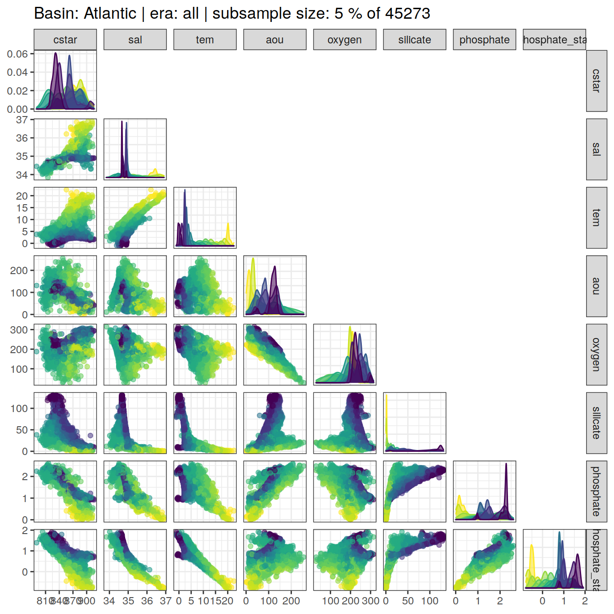
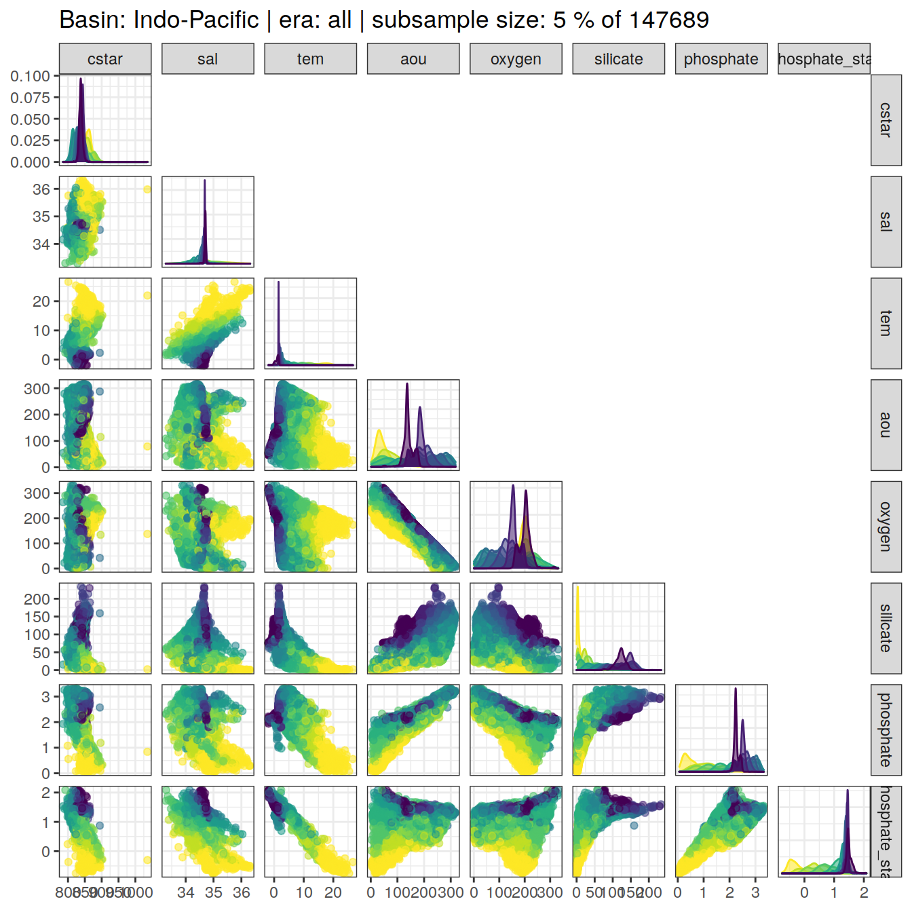
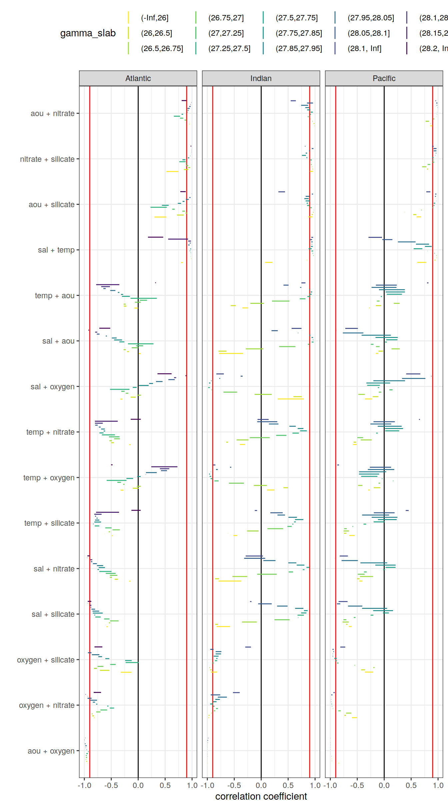
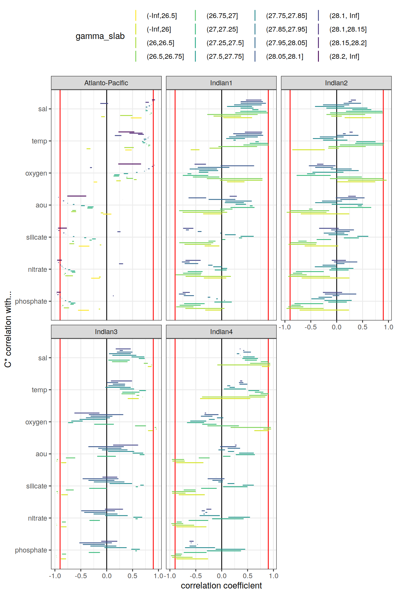

Last updated: 2020-12-07
Checks: 7 0
Knit directory: emlr_obs_v_XXX/
This reproducible R Markdown analysis was created with workflowr (version 1.6.2). The Checks tab describes the reproducibility checks that were applied when the results were created. The Past versions tab lists the development history.
Great! Since the R Markdown file has been committed to the Git repository, you know the exact version of the code that produced these results.
Great job! The global environment was empty. Objects defined in the global environment can affect the analysis in your R Markdown file in unknown ways. For reproduciblity it’s best to always run the code in an empty environment.
The command set.seed(20200707) was run prior to running the code in the R Markdown file. Setting a seed ensures that any results that rely on randomness, e.g. subsampling or permutations, are reproducible.
Great job! Recording the operating system, R version, and package versions is critical for reproducibility.
Nice! There were no cached chunks for this analysis, so you can be confident that you successfully produced the results during this run.
Great job! Using relative paths to the files within your workflowr project makes it easier to run your code on other machines.
Great! You are using Git for version control. Tracking code development and connecting the code version to the results is critical for reproducibility.
The results in this page were generated with repository version fe4f9b0. See the Past versions tab to see a history of the changes made to the R Markdown and HTML files.
Note that you need to be careful to ensure that all relevant files for the analysis have been committed to Git prior to generating the results (you can use wflow_publish or wflow_git_commit). workflowr only checks the R Markdown file, but you know if there are other scripts or data files that it depends on. Below is the status of the Git repository when the results were generated:
Ignored files:
Ignored: .Rhistory
Ignored: .Rproj.user/
Unstaged changes:
Modified: code/Workflowr_project_managment.R
Note that any generated files, e.g. HTML, png, CSS, etc., are not included in this status report because it is ok for generated content to have uncommitted changes.
These are the previous versions of the repository in which changes were made to the R Markdown (analysis/eMLR_assumption_testing.Rmd) and HTML (docs/eMLR_assumption_testing.html) files. If you’ve configured a remote Git repository (see ?wflow_git_remote), click on the hyperlinks in the table below to view the files as they were in that past version.
| File | Version | Author | Date | Message |
|---|---|---|---|---|
| html | 7555355 | jens-daniel-mueller | 2020-12-07 | Build site. |
| html | 143d6fa | jens-daniel-mueller | 2020-12-07 | Build site. |
| Rmd | 33b1973 | jens-daniel-mueller | 2020-12-07 | run with WOCE flag 2 only |
| html | abc6818 | jens-daniel-mueller | 2020-12-03 | Build site. |
| Rmd | 992ba15 | jens-daniel-mueller | 2020-12-03 | rebuild with variable inventory depth |
| html | c8c2e7b | jens-daniel-mueller | 2020-12-03 | Build site. |
| Rmd | 83203db | jens-daniel-mueller | 2020-12-03 | calculate cant with variable inventory depth |
| html | 090e4d5 | jens-daniel-mueller | 2020-12-02 | Build site. |
| html | 7c25f7a | jens-daniel-mueller | 2020-12-02 | Build site. |
| html | ec8dc38 | jens-daniel-mueller | 2020-12-02 | Build site. |
| html | c987de1 | jens-daniel-mueller | 2020-12-02 | Build site. |
| html | f8358f8 | jens-daniel-mueller | 2020-12-02 | Build site. |
| html | b03ddb8 | jens-daniel-mueller | 2020-12-02 | Build site. |
| Rmd | 9183e8f | jens-daniel-mueller | 2020-12-02 | revised assignment of era to eras |
| html | 22d0127 | jens-daniel-mueller | 2020-12-01 | Build site. |
| html | 0ff728b | jens-daniel-mueller | 2020-12-01 | Build site. |
| html | 91435ae | jens-daniel-mueller | 2020-12-01 | Build site. |
| Rmd | 17d09be | jens-daniel-mueller | 2020-12-01 | auto eras naming |
| html | cf19652 | jens-daniel-mueller | 2020-11-30 | Build site. |
| Rmd | 2842970 | jens-daniel-mueller | 2020-11-30 | cleaned for eMLR part only |
| html | 196be51 | jens-daniel-mueller | 2020-11-30 | Build site. |
| Rmd | 7a4b015 | jens-daniel-mueller | 2020-11-30 | first rebuild on ETH server |
| Rmd | bc61ce3 | Jens Müller | 2020-11-30 | Initial commit |
| html | bc61ce3 | Jens Müller | 2020-11-30 | Initial commit |
Required are:
GLODAP <-
read_csv(paste(path_version_data,
"GLODAPv2.2020_MLR_fitting_ready.csv",
sep = ""))The correlation between:
were investigated based on:
For an overview, a random subset of data from all eras was plotted separately for both basins, with color indicating neutral density slabs (high density = dark-purple color).
GLODAP %>%
filter(basin == "Atlantic") %>%
sample_frac(0.05) %>%
ggpairs(columns = c("cstar",
"sal",
"tem",
"aou",
"oxygen",
"silicate",
"phosphate",
"phosphate_star"),
upper = "blank",
ggplot2::aes(col = gamma_slab, fill = gamma_slab, alpha = 0.01)) +
scale_fill_viridis_d(direction = -1) +
scale_color_viridis_d(direction = -1) +
labs(title = paste("Basin: Atlantic | era: all | subsample size: 5 % of",
nrow(GLODAP %>% filter(basin == "Atlantic"))))
GLODAP %>%
filter(basin == "Indo-Pacific") %>%
sample_frac(0.05) %>%
ggpairs(columns = c("cstar",
"sal",
"tem",
"aou",
"oxygen",
"silicate",
"phosphate",
"phosphate_star"),
upper = "blank",
ggplot2::aes(col = gamma_slab, fill = gamma_slab, alpha = 0.01)) +
scale_fill_viridis_d(direction = -1) +
scale_color_viridis_d(direction = -1) +
labs(title = paste("Basin: Indo-Pacific | era: all | subsample size: 5 % of",
nrow(GLODAP %>% filter(basin == "Indo-Pacific") )))
Individual correlation plots for each basin, era and neutral density (gamma) slab are available at updata.
if (params_local$plot_all_figures == "y") {
for (i_basin in unique(GLODAP$basin)) {
for (i_era in unique(GLODAP$era)) {
# i_basin <- unique(GLODAP$basin)[1]
# i_era <- unique(GLODAP$era)[1]
# print(i_basin)
# print(i_era)
GLODAP_basin_era <- GLODAP %>%
filter(basin == i_basin,
era == i_era)
for (i_gamma_slab in unique(GLODAP_basin_era$gamma_slab)) {
# i_gamma_slab <- unique(GLODAP_basin_era$gamma_slab)[5]
# print(i_gamma_slab)
GLODAP_highlight <- GLODAP_basin_era %>%
mutate(gamma_highlight = if_else(gamma_slab == i_gamma_slab,
"in", "out")) %>%
arrange(desc(gamma_highlight))
p <- GLODAP_highlight %>%
ggpairs(
columns = c(
"cstar",
"sal",
"tem",
"aou",
"oxygen",
"silicate",
"phosphate",
"phosphate_star"
),
ggplot2::aes(
col = gamma_highlight,
fill = gamma_highlight,
alpha = 0.01
)
) +
scale_fill_manual(values = c("red", "grey")) +
scale_color_manual(values = c("red", "grey")) +
labs(
title = paste(
i_era,
"|",
i_basin,
"| Gamma slab",
i_gamma_slab,
"| # obs total",
nrow(GLODAP_basin_era),
"| # obs slab",
nrow(GLODAP_highlight %>%
filter(gamma_highlight == "in"))
)
)
png(
filename = paste(
path_version_figures,
"Observations_correlation/",
paste(
"Predictor_correlation",
i_era,
i_basin,
i_gamma_slab,
".png",
sep = "_"
),
sep = ""),
width = 12,
height = 12,
units = "in",
res = 300
)
print(p)
dev.off()
}
}
}
}Correlation coefficients were calculated indivdually within each slabs, era and basin.
for (i_basin in unique(GLODAP$basin)) {
for (i_era in unique(GLODAP$era)) {
# i_basin <- unique(GLODAP$basin)[1]
# i_era <- unique(GLODAP$era)[1]
print(i_basin)
print(i_era)
GLODAP_basin_era <- GLODAP %>%
filter(basin == i_basin,
era == i_era) %>%
select(basin,
era,
gamma_slab,
cstar,
sal,
tem,
aou,
oxygen,
silicate,
phosphate,
phosphate_star)
for (i_gamma_slab in unique(GLODAP_basin_era$gamma_slab)) {
# i_gamma_slab <- unique(GLODAP_basin_era$gamma_slab)[5]
print(i_gamma_slab)
GLODAP_basin_era_slab <- GLODAP_basin_era %>%
filter(gamma_slab == i_gamma_slab)
cor_cstar_predictor_temp <- GLODAP_basin_era_slab %>%
select(-c(basin, era, gamma_slab)) %>%
correlate() %>%
focus(cstar) %>%
mutate(basin = i_basin,
era = i_era,
gamma_slab = i_gamma_slab)
if (exists("cor_cstar_predictor")) {
cor_cstar_predictor <- bind_rows(cor_cstar_predictor, cor_cstar_predictor_temp)
}
if (!exists("cor_cstar_predictor")) {
cor_cstar_predictor <- cor_cstar_predictor_temp
}
cor_predictors_temp <- GLODAP_basin_era_slab %>%
select(-c(basin, era, gamma_slab)) %>%
correlate() %>%
shave %>%
stretch() %>%
filter(!is.na(r),
x != "cstar",
y != "cstar") %>%
mutate(pair = paste(x, y, sep = " + ")) %>%
select(-c(x, y)) %>%
mutate(basin = i_basin,
era = i_era,
gamma_slab = i_gamma_slab)
if (exists("cor_predictors")) {
cor_predictors <- bind_rows(cor_predictors, cor_predictors_temp)
}
if (!exists("cor_predictors")) {
cor_predictors <- cor_predictors_temp
}
}
}
}
rm(cor_predictors_temp, cor_cstar_predictor_temp,
i_gamma_slab, i_era, i_basin,
GLODAP_basin_era, GLODAP_basin_era_slab)Below, the range of correlations coefficients for each predictor pair is plotted per basin (facet) and density slab (color). Note that the range indicates the min and max values of in total 3 calculated coefficients (one per era).
cor_predictors_stats <- cor_predictors %>%
group_by(pair, basin, gamma_slab) %>%
summarise(mean_r = mean(r),
min_r = min(r),
max_r = max(r)) %>%
ungroup()
cor_predictors_stats %>%
mutate(pair = reorder(pair, mean_r)) %>%
ggplot() +
geom_vline(xintercept = c(-0.9, 0.9), col = "red") +
geom_vline(xintercept = 0) +
geom_linerange(
aes(y = pair, xmin = min_r, xmax = max_r, col = gamma_slab),
position = position_dodge(width = 0.6)) +
facet_wrap(~basin) +
scale_color_viridis_d(direction = -1) +
labs(x = "correlation coefficient", y = "") +
theme(legend.position = "top")
kable(cor_predictors_stats) %>%
add_header_above() %>%
kable_styling() %>%
scroll_box(width = "100%", height = "400px")| pair | basin | gamma_slab | mean_r | min_r | max_r |
|---|---|---|---|---|---|
| aou + oxygen | Atlantic | (-Inf,26] | -0.9210752 | -0.9538543 | -0.8853583 |
| aou + oxygen | Atlantic | (26,26.5] | -0.8881004 | -0.9122340 | -0.8408464 |
| aou + oxygen | Atlantic | (26.5,26.75] | -0.9696370 | -0.9820812 | -0.9527269 |
| aou + oxygen | Atlantic | (26.75,27] | -0.9810172 | -0.9913860 | -0.9721058 |
| aou + oxygen | Atlantic | (27,27.25] | -0.9762627 | -0.9845091 | -0.9657187 |
| aou + oxygen | Atlantic | (27.25,27.5] | -0.9458876 | -0.9546374 | -0.9289641 |
| aou + oxygen | Atlantic | (27.5,27.75] | -0.9323392 | -0.9671125 | -0.9052487 |
| aou + oxygen | Atlantic | (27.75,27.85] | -0.9709695 | -0.9813518 | -0.9607842 |
| aou + oxygen | Atlantic | (27.85,27.95] | -0.9885852 | -0.9927688 | -0.9864162 |
| aou + oxygen | Atlantic | (27.95,28.05] | -0.9886018 | -0.9918302 | -0.9839663 |
| aou + oxygen | Atlantic | (28.05,28.1] | -0.9890183 | -0.9946799 | -0.9820322 |
| aou + oxygen | Atlantic | (28.1,28.15] | -0.9932511 | -0.9945640 | -0.9922304 |
| aou + oxygen | Atlantic | (28.15,28.2] | -0.9979748 | -0.9988573 | -0.9974303 |
| aou + oxygen | Atlantic | (28.2, Inf] | -0.9833299 | -0.9895300 | -0.9739090 |
| aou + oxygen | Indo-Pacific | (-Inf,26] | -0.9220678 | -0.9644994 | -0.8942352 |
| aou + oxygen | Indo-Pacific | (26,26.5] | -0.9817925 | -0.9850603 | -0.9753497 |
| aou + oxygen | Indo-Pacific | (26.5,26.75] | -0.9856857 | -0.9883603 | -0.9829294 |
| aou + oxygen | Indo-Pacific | (26.75,27] | -0.9842471 | -0.9857587 | -0.9834144 |
| aou + oxygen | Indo-Pacific | (27,27.25] | -0.9910084 | -0.9929277 | -0.9871944 |
| aou + oxygen | Indo-Pacific | (27.25,27.5] | -0.9923465 | -0.9952587 | -0.9869129 |
| aou + oxygen | Indo-Pacific | (27.5,27.75] | -0.9912967 | -0.9936503 | -0.9872213 |
| aou + oxygen | Indo-Pacific | (27.75,27.85] | -0.9961710 | -0.9989593 | -0.9925303 |
| aou + oxygen | Indo-Pacific | (27.85,27.95] | -0.9964687 | -0.9987338 | -0.9942513 |
| aou + oxygen | Indo-Pacific | (27.95,28.05] | -0.9948675 | -0.9960943 | -0.9932342 |
| aou + oxygen | Indo-Pacific | (28.05,28.1] | -0.9949621 | -0.9958482 | -0.9939395 |
| aou + oxygen | Indo-Pacific | (28.1, Inf] | -0.9910517 | -0.9926673 | -0.9881660 |
| aou + phosphate | Atlantic | (-Inf,26] | 0.5689947 | 0.3605123 | 0.7434863 |
| aou + phosphate | Atlantic | (26,26.5] | 0.7620172 | 0.6299872 | 0.8975025 |
| aou + phosphate | Atlantic | (26.5,26.75] | 0.8818707 | 0.8402621 | 0.9197556 |
| aou + phosphate | Atlantic | (26.75,27] | 0.8727681 | 0.8327756 | 0.9172064 |
| aou + phosphate | Atlantic | (27,27.25] | 0.8431516 | 0.8038253 | 0.8821878 |
| aou + phosphate | Atlantic | (27.25,27.5] | 0.7359397 | 0.6862061 | 0.7926507 |
| aou + phosphate | Atlantic | (27.5,27.75] | 0.8669679 | 0.8257318 | 0.9173248 |
| aou + phosphate | Atlantic | (27.75,27.85] | 0.9404207 | 0.9241798 | 0.9642200 |
| aou + phosphate | Atlantic | (27.85,27.95] | 0.9535627 | 0.9459243 | 0.9628152 |
| aou + phosphate | Atlantic | (27.95,28.05] | 0.9621850 | 0.9511837 | 0.9830430 |
| aou + phosphate | Atlantic | (28.05,28.1] | 0.9683516 | 0.9487489 | 0.9861289 |
| aou + phosphate | Atlantic | (28.1,28.15] | 0.9807303 | 0.9776340 | 0.9833587 |
| aou + phosphate | Atlantic | (28.15,28.2] | 0.9920505 | 0.9887725 | 0.9944404 |
| aou + phosphate | Atlantic | (28.2, Inf] | 0.8366257 | 0.6879006 | 0.9447263 |
| aou + phosphate | Indo-Pacific | (-Inf,26] | 0.9399344 | 0.9074036 | 0.9653313 |
| aou + phosphate | Indo-Pacific | (26,26.5] | 0.9557211 | 0.9505935 | 0.9629755 |
| aou + phosphate | Indo-Pacific | (26.5,26.75] | 0.9519295 | 0.9400932 | 0.9630614 |
| aou + phosphate | Indo-Pacific | (26.75,27] | 0.9505858 | 0.9463419 | 0.9535104 |
| aou + phosphate | Indo-Pacific | (27,27.25] | 0.9692888 | 0.9579338 | 0.9793673 |
| aou + phosphate | Indo-Pacific | (27.25,27.5] | 0.9679110 | 0.9569239 | 0.9782868 |
| aou + phosphate | Indo-Pacific | (27.5,27.75] | 0.9561198 | 0.9505058 | 0.9590257 |
| aou + phosphate | Indo-Pacific | (27.75,27.85] | 0.9800476 | 0.9678177 | 0.9882885 |
| aou + phosphate | Indo-Pacific | (27.85,27.95] | 0.9777202 | 0.9655393 | 0.9884881 |
| aou + phosphate | Indo-Pacific | (27.95,28.05] | 0.9639538 | 0.9509206 | 0.9741448 |
| aou + phosphate | Indo-Pacific | (28.05,28.1] | 0.9523880 | 0.9420098 | 0.9656907 |
| aou + phosphate | Indo-Pacific | (28.1, Inf] | 0.7713293 | 0.7101089 | 0.8250526 |
| aou + phosphate_star | Atlantic | (-Inf,26] | 0.0429178 | -0.3943265 | 0.3362197 |
| aou + phosphate_star | Atlantic | (26,26.5] | 0.4141354 | 0.1179942 | 0.7489838 |
| aou + phosphate_star | Atlantic | (26.5,26.75] | 0.4381314 | 0.3116008 | 0.5982470 |
| aou + phosphate_star | Atlantic | (26.75,27] | 0.1949678 | 0.0809328 | 0.2556932 |
| aou + phosphate_star | Atlantic | (27,27.25] | 0.2612397 | 0.0434229 | 0.4574559 |
| aou + phosphate_star | Atlantic | (27.25,27.5] | 0.2309670 | 0.1533082 | 0.3390705 |
| aou + phosphate_star | Atlantic | (27.5,27.75] | 0.5967571 | 0.5274223 | 0.6700944 |
| aou + phosphate_star | Atlantic | (27.75,27.85] | 0.7356616 | 0.6714489 | 0.8036255 |
| aou + phosphate_star | Atlantic | (27.85,27.95] | 0.7087179 | 0.6914005 | 0.7270557 |
| aou + phosphate_star | Atlantic | (27.95,28.05] | 0.8216495 | 0.7515084 | 0.9184608 |
| aou + phosphate_star | Atlantic | (28.05,28.1] | 0.8839822 | 0.8196335 | 0.9496522 |
| aou + phosphate_star | Atlantic | (28.1,28.15] | 0.9258714 | 0.9164755 | 0.9356976 |
| aou + phosphate_star | Atlantic | (28.15,28.2] | 0.9742222 | 0.9598697 | 0.9842209 |
| aou + phosphate_star | Atlantic | (28.2, Inf] | 0.5560655 | 0.1711696 | 0.8316891 |
| aou + phosphate_star | Indo-Pacific | (-Inf,26] | 0.6637260 | 0.5373306 | 0.7305231 |
| aou + phosphate_star | Indo-Pacific | (26,26.5] | 0.5845506 | 0.5276381 | 0.6244718 |
| aou + phosphate_star | Indo-Pacific | (26.5,26.75] | 0.4239260 | 0.1766281 | 0.5779456 |
| aou + phosphate_star | Indo-Pacific | (26.75,27] | 0.3791636 | 0.3179066 | 0.4680905 |
| aou + phosphate_star | Indo-Pacific | (27,27.25] | 0.1096405 | -0.0554958 | 0.2307605 |
| aou + phosphate_star | Indo-Pacific | (27.25,27.5] | -0.3903647 | -0.4372709 | -0.3445722 |
| aou + phosphate_star | Indo-Pacific | (27.5,27.75] | -0.3170452 | -0.5775859 | 0.0575821 |
| aou + phosphate_star | Indo-Pacific | (27.75,27.85] | -0.5134961 | -0.6072076 | -0.4620515 |
| aou + phosphate_star | Indo-Pacific | (27.85,27.95] | -0.1459221 | -0.1683655 | -0.1202353 |
| aou + phosphate_star | Indo-Pacific | (27.95,28.05] | 0.1563843 | 0.0599954 | 0.2176460 |
| aou + phosphate_star | Indo-Pacific | (28.05,28.1] | 0.3209820 | 0.2595290 | 0.4137902 |
| aou + phosphate_star | Indo-Pacific | (28.1, Inf] | -0.6457128 | -0.6890703 | -0.5914079 |
| aou + silicate | Atlantic | (-Inf,26] | 0.3399487 | 0.0961103 | 0.5754309 |
| aou + silicate | Atlantic | (26,26.5] | 0.6772439 | 0.5771949 | 0.7660910 |
| aou + silicate | Atlantic | (26.5,26.75] | 0.8886025 | 0.8700364 | 0.9214654 |
| aou + silicate | Atlantic | (26.75,27] | 0.8721720 | 0.8422815 | 0.8983606 |
| aou + silicate | Atlantic | (27,27.25] | 0.8009337 | 0.7423022 | 0.8729256 |
| aou + silicate | Atlantic | (27.25,27.5] | 0.5404507 | 0.4230008 | 0.6871112 |
| aou + silicate | Atlantic | (27.5,27.75] | 0.6807189 | 0.6481381 | 0.7422384 |
| aou + silicate | Atlantic | (27.75,27.85] | 0.8514006 | 0.8240218 | 0.8789206 |
| aou + silicate | Atlantic | (27.85,27.95] | 0.8986513 | 0.8887057 | 0.9087272 |
| aou + silicate | Atlantic | (27.95,28.05] | 0.9451969 | 0.9389554 | 0.9574865 |
| aou + silicate | Atlantic | (28.05,28.1] | 0.9705431 | 0.9578447 | 0.9826895 |
| aou + silicate | Atlantic | (28.1,28.15] | 0.9774897 | 0.9738770 | 0.9800912 |
| aou + silicate | Atlantic | (28.15,28.2] | 0.9910801 | 0.9882745 | 0.9933202 |
| aou + silicate | Atlantic | (28.2, Inf] | 0.8513076 | 0.7442040 | 0.9298133 |
| aou + silicate | Indo-Pacific | (-Inf,26] | 0.7397582 | 0.6747236 | 0.8047999 |
| aou + silicate | Indo-Pacific | (26,26.5] | 0.6568471 | 0.5410996 | 0.7511108 |
| aou + silicate | Indo-Pacific | (26.5,26.75] | 0.6122051 | 0.4145844 | 0.7306881 |
| aou + silicate | Indo-Pacific | (26.75,27] | 0.7476919 | 0.6953753 | 0.7746168 |
| aou + silicate | Indo-Pacific | (27,27.25] | 0.8768329 | 0.8476834 | 0.9058018 |
| aou + silicate | Indo-Pacific | (27.25,27.5] | 0.9045950 | 0.8725306 | 0.9351112 |
| aou + silicate | Indo-Pacific | (27.5,27.75] | 0.9210461 | 0.8758081 | 0.9467386 |
| aou + silicate | Indo-Pacific | (27.75,27.85] | 0.9654229 | 0.9479156 | 0.9761985 |
| aou + silicate | Indo-Pacific | (27.85,27.95] | 0.9613382 | 0.9481756 | 0.9699239 |
| aou + silicate | Indo-Pacific | (27.95,28.05] | 0.9467809 | 0.9378697 | 0.9523270 |
| aou + silicate | Indo-Pacific | (28.05,28.1] | 0.9469161 | 0.9449646 | 0.9484274 |
| aou + silicate | Indo-Pacific | (28.1, Inf] | 0.6250031 | 0.4996577 | 0.6883816 |
| oxygen + phosphate | Atlantic | (-Inf,26] | -0.3418647 | -0.5219585 | -0.1474894 |
| oxygen + phosphate | Atlantic | (26,26.5] | -0.4323649 | -0.5795976 | -0.2701576 |
| oxygen + phosphate | Atlantic | (26.5,26.75] | -0.7466955 | -0.8100534 | -0.6391082 |
| oxygen + phosphate | Atlantic | (26.75,27] | -0.7651696 | -0.8596036 | -0.6818942 |
| oxygen + phosphate | Atlantic | (27,27.25] | -0.7105816 | -0.7683184 | -0.6251270 |
| oxygen + phosphate | Atlantic | (27.25,27.5] | -0.4837410 | -0.5794747 | -0.3743615 |
| oxygen + phosphate | Atlantic | (27.5,27.75] | -0.6483930 | -0.8023453 | -0.5287077 |
| oxygen + phosphate | Atlantic | (27.75,27.85] | -0.8411065 | -0.9045691 | -0.8041696 |
| oxygen + phosphate | Atlantic | (27.85,27.95] | -0.9051241 | -0.9322139 | -0.8881336 |
| oxygen + phosphate | Atlantic | (27.95,28.05] | -0.9243783 | -0.9643825 | -0.8926028 |
| oxygen + phosphate | Atlantic | (28.05,28.1] | -0.9314339 | -0.9740612 | -0.8819955 |
| oxygen + phosphate | Atlantic | (28.1,28.15] | -0.9577026 | -0.9664617 | -0.9490616 |
| oxygen + phosphate | Atlantic | (28.15,28.2] | -0.9881598 | -0.9938124 | -0.9795958 |
| oxygen + phosphate | Atlantic | (28.2, Inf] | -0.7499612 | -0.9021662 | -0.5423359 |
| oxygen + phosphate | Indo-Pacific | (-Inf,26] | -0.7862454 | -0.9032623 | -0.6906567 |
| oxygen + phosphate | Indo-Pacific | (26,26.5] | -0.8893117 | -0.9084707 | -0.8655858 |
| oxygen + phosphate | Indo-Pacific | (26.5,26.75] | -0.8918674 | -0.9160933 | -0.8740913 |
| oxygen + phosphate | Indo-Pacific | (26.75,27] | -0.8854172 | -0.8916323 | -0.8767115 |
| oxygen + phosphate | Indo-Pacific | (27,27.25] | -0.9340668 | -0.9555268 | -0.9070964 |
| oxygen + phosphate | Indo-Pacific | (27.25,27.5] | -0.9445130 | -0.9628987 | -0.9104178 |
| oxygen + phosphate | Indo-Pacific | (27.5,27.75] | -0.9526026 | -0.9707371 | -0.9241545 |
| oxygen + phosphate | Indo-Pacific | (27.75,27.85] | -0.9723783 | -0.9887399 | -0.9510259 |
| oxygen + phosphate | Indo-Pacific | (27.85,27.95] | -0.9675189 | -0.9861357 | -0.9491900 |
| oxygen + phosphate | Indo-Pacific | (27.95,28.05] | -0.9407701 | -0.9551042 | -0.9221251 |
| oxygen + phosphate | Indo-Pacific | (28.05,28.1] | -0.9246553 | -0.9418615 | -0.9153923 |
| oxygen + phosphate | Indo-Pacific | (28.1, Inf] | -0.6928896 | -0.7569192 | -0.6138085 |
| oxygen + phosphate_star | Atlantic | (-Inf,26] | 0.2335784 | -0.0326522 | 0.5998408 |
| oxygen + phosphate_star | Atlantic | (26,26.5] | -0.0057782 | -0.3245808 | 0.2892807 |
| oxygen + phosphate_star | Atlantic | (26.5,26.75] | -0.2178914 | -0.4049578 | -0.1108167 |
| oxygen + phosphate_star | Atlantic | (26.75,27] | -0.0099064 | -0.0521215 | 0.0465560 |
| oxygen + phosphate_star | Atlantic | (27,27.25] | -0.0548123 | -0.2669300 | 0.1299694 |
| oxygen + phosphate_star | Atlantic | (27.25,27.5] | 0.0890013 | -0.0477493 | 0.1712288 |
| oxygen + phosphate_star | Atlantic | (27.5,27.75] | -0.2899180 | -0.4777313 | -0.1350067 |
| oxygen + phosphate_star | Atlantic | (27.75,27.85] | -0.5642524 | -0.6857837 | -0.4843981 |
| oxygen + phosphate_star | Atlantic | (27.85,27.95] | -0.6064827 | -0.6536993 | -0.5723309 |
| oxygen + phosphate_star | Atlantic | (27.95,28.05] | -0.7470388 | -0.8775151 | -0.6747859 |
| oxygen + phosphate_star | Atlantic | (28.05,28.1] | -0.8192775 | -0.9257522 | -0.7087090 |
| oxygen + phosphate_star | Atlantic | (28.1,28.15] | -0.8839606 | -0.9036748 | -0.8661987 |
| oxygen + phosphate_star | Atlantic | (28.15,28.2] | -0.9663240 | -0.9823756 | -0.9429150 |
| oxygen + phosphate_star | Atlantic | (28.2, Inf] | -0.4330262 | -0.7615269 | 0.0194009 |
| oxygen + phosphate_star | Indo-Pacific | (-Inf,26] | -0.3765236 | -0.5706185 | -0.1584270 |
| oxygen + phosphate_star | Indo-Pacific | (26,26.5] | -0.4307128 | -0.4642062 | -0.3826324 |
| oxygen + phosphate_star | Indo-Pacific | (26.5,26.75] | -0.2765247 | -0.4248449 | -0.0153823 |
| oxygen + phosphate_star | Indo-Pacific | (26.75,27] | -0.2169481 | -0.3068553 | -0.1611387 |
| oxygen + phosphate_star | Indo-Pacific | (27,27.25] | 0.0101716 | -0.1287786 | 0.2033718 |
| oxygen + phosphate_star | Indo-Pacific | (27.25,27.5] | 0.4696153 | 0.3901912 | 0.5614765 |
| oxygen + phosphate_star | Indo-Pacific | (27.5,27.75] | 0.3343969 | -0.1140382 | 0.6758984 |
| oxygen + phosphate_star | Indo-Pacific | (27.75,27.85] | 0.5513506 | 0.5116497 | 0.6108994 |
| oxygen + phosphate_star | Indo-Pacific | (27.85,27.95] | 0.1960124 | 0.1418965 | 0.2280981 |
| oxygen + phosphate_star | Indo-Pacific | (27.95,28.05] | -0.0747479 | -0.1287166 | 0.0169182 |
| oxygen + phosphate_star | Indo-Pacific | (28.05,28.1] | -0.2395722 | -0.3455146 | -0.1634257 |
| oxygen + phosphate_star | Indo-Pacific | (28.1, Inf] | 0.7322639 | 0.6940630 | 0.7645888 |
| oxygen + silicate | Atlantic | (-Inf,26] | -0.0894472 | -0.3797872 | 0.1409389 |
| oxygen + silicate | Atlantic | (26,26.5] | -0.3570185 | -0.4136890 | -0.2497587 |
| oxygen + silicate | Atlantic | (26.5,26.75] | -0.7749850 | -0.8285857 | -0.7088025 |
| oxygen + silicate | Atlantic | (26.75,27] | -0.7841325 | -0.8512577 | -0.7225555 |
| oxygen + silicate | Atlantic | (27,27.25] | -0.6716258 | -0.7674405 | -0.6191414 |
| oxygen + silicate | Atlantic | (27.25,27.5] | -0.2677352 | -0.4605697 | -0.1595736 |
| oxygen + silicate | Atlantic | (27.5,27.75] | -0.4288128 | -0.5855856 | -0.3303758 |
| oxygen + silicate | Atlantic | (27.75,27.85] | -0.7320099 | -0.7968375 | -0.6733727 |
| oxygen + silicate | Atlantic | (27.85,27.95] | -0.8324342 | -0.8627791 | -0.8102405 |
| oxygen + silicate | Atlantic | (27.95,28.05] | -0.8925670 | -0.9190641 | -0.8698766 |
| oxygen + silicate | Atlantic | (28.05,28.1] | -0.9293936 | -0.9624466 | -0.8927652 |
| oxygen + silicate | Atlantic | (28.1,28.15] | -0.9516559 | -0.9544763 | -0.9494733 |
| oxygen + silicate | Atlantic | (28.15,28.2] | -0.9873005 | -0.9914727 | -0.9827329 |
| oxygen + silicate | Atlantic | (28.2, Inf] | -0.7661458 | -0.8828302 | -0.6042015 |
| oxygen + silicate | Indo-Pacific | (-Inf,26] | -0.5180208 | -0.7062389 | -0.3780615 |
| oxygen + silicate | Indo-Pacific | (26,26.5] | -0.5457613 | -0.6676851 | -0.4229569 |
| oxygen + silicate | Indo-Pacific | (26.5,26.75] | -0.4973947 | -0.6428274 | -0.2804766 |
| oxygen + silicate | Indo-Pacific | (26.75,27] | -0.6375856 | -0.6768693 | -0.5704625 |
| oxygen + silicate | Indo-Pacific | (27,27.25] | -0.8175221 | -0.8581719 | -0.7699141 |
| oxygen + silicate | Indo-Pacific | (27.25,27.5] | -0.8589905 | -0.9043372 | -0.8040922 |
| oxygen + silicate | Indo-Pacific | (27.5,27.75] | -0.8788714 | -0.9167437 | -0.8090341 |
| oxygen + silicate | Indo-Pacific | (27.75,27.85] | -0.9496669 | -0.9721806 | -0.9174215 |
| oxygen + silicate | Indo-Pacific | (27.85,27.95] | -0.9450252 | -0.9629198 | -0.9227704 |
| oxygen + silicate | Indo-Pacific | (27.95,28.05] | -0.9200425 | -0.9298993 | -0.9048741 |
| oxygen + silicate | Indo-Pacific | (28.05,28.1] | -0.9211391 | -0.9240902 | -0.9182833 |
| oxygen + silicate | Indo-Pacific | (28.1, Inf] | -0.5386936 | -0.6180874 | -0.3851015 |
| phosphate + phosphate_star | Atlantic | (-Inf,26] | 0.8169853 | 0.7028988 | 0.8784980 |
| phosphate + phosphate_star | Atlantic | (26,26.5] | 0.8961969 | 0.8434988 | 0.9589086 |
| phosphate + phosphate_star | Atlantic | (26.5,26.75] | 0.8048342 | 0.7151354 | 0.8641636 |
| phosphate + phosphate_star | Atlantic | (26.75,27] | 0.6377882 | 0.4703877 | 0.7477076 |
| phosphate + phosphate_star | Atlantic | (27,27.25] | 0.7307104 | 0.5727959 | 0.8219308 |
| phosphate + phosphate_star | Atlantic | (27.25,27.5] | 0.8261256 | 0.7871601 | 0.8494866 |
| phosphate + phosphate_star | Atlantic | (27.5,27.75] | 0.9135330 | 0.9076506 | 0.9205365 |
| phosphate + phosphate_star | Atlantic | (27.75,27.85] | 0.9198931 | 0.9020369 | 0.9306219 |
| phosphate + phosphate_star | Atlantic | (27.85,27.95] | 0.8860697 | 0.8779941 | 0.8969522 |
| phosphate + phosphate_star | Atlantic | (27.95,28.05] | 0.9429353 | 0.9140276 | 0.9731065 |
| phosphate + phosphate_star | Atlantic | (28.05,28.1] | 0.9712398 | 0.9575510 | 0.9873045 |
| phosphate + phosphate_star | Atlantic | (28.1,28.15] | 0.9810832 | 0.9795266 | 0.9833385 |
| phosphate + phosphate_star | Atlantic | (28.15,28.2] | 0.9943474 | 0.9906079 | 0.9970583 |
| phosphate + phosphate_star | Atlantic | (28.2, Inf] | 0.9123244 | 0.8294818 | 0.9666212 |
| phosphate + phosphate_star | Indo-Pacific | (-Inf,26] | 0.8626346 | 0.8234682 | 0.8966432 |
| phosphate + phosphate_star | Indo-Pacific | (26,26.5] | 0.7939811 | 0.7562202 | 0.8338170 |
| phosphate + phosphate_star | Indo-Pacific | (26.5,26.75] | 0.6740277 | 0.4991496 | 0.7969298 |
| phosphate + phosphate_star | Indo-Pacific | (26.75,27] | 0.6439913 | 0.5905200 | 0.7268341 |
| phosphate + phosphate_star | Indo-Pacific | (27,27.25] | 0.3421894 | 0.2276485 | 0.4155000 |
| phosphate + phosphate_star | Indo-Pacific | (27.25,27.5] | -0.1622094 | -0.2002070 | -0.1175686 |
| phosphate + phosphate_star | Indo-Pacific | (27.5,27.75] | -0.0588897 | -0.3430887 | 0.3492793 |
| phosphate + phosphate_star | Indo-Pacific | (27.75,27.85] | -0.3491664 | -0.4855459 | -0.2436382 |
| phosphate + phosphate_star | Indo-Pacific | (27.85,27.95] | 0.0503607 | 0.0243327 | 0.1001679 |
| phosphate + phosphate_star | Indo-Pacific | (27.95,28.05] | 0.4044894 | 0.2800691 | 0.5023663 |
| phosphate + phosphate_star | Indo-Pacific | (28.05,28.1] | 0.5881779 | 0.5261055 | 0.6916787 |
| phosphate + phosphate_star | Indo-Pacific | (28.1, Inf] | -0.0205283 | -0.1178242 | 0.1423180 |
| sal + aou | Atlantic | (-Inf,26] | -0.1387372 | -0.4352518 | 0.3500435 |
| sal + aou | Atlantic | (26,26.5] | -0.2944057 | -0.6746198 | 0.0106171 |
| sal + aou | Atlantic | (26.5,26.75] | -0.2595161 | -0.4740326 | -0.0084286 |
| sal + aou | Atlantic | (26.75,27] | -0.1309465 | -0.2081959 | 0.0125727 |
| sal + aou | Atlantic | (27,27.25] | -0.2705194 | -0.4830665 | -0.0358996 |
| sal + aou | Atlantic | (27.25,27.5] | -0.2202899 | -0.3434923 | -0.1210769 |
| sal + aou | Atlantic | (27.5,27.75] | -0.4628952 | -0.5242823 | -0.3870458 |
| sal + aou | Atlantic | (27.75,27.85] | -0.4547492 | -0.5077743 | -0.3998055 |
| sal + aou | Atlantic | (27.85,27.95] | -0.3475283 | -0.3764282 | -0.2917037 |
| sal + aou | Atlantic | (27.95,28.05] | -0.5504926 | -0.7189129 | -0.3281245 |
| sal + aou | Atlantic | (28.05,28.1] | -0.7545428 | -0.8423117 | -0.6759589 |
| sal + aou | Atlantic | (28.1,28.15] | -0.8397217 | -0.8513751 | -0.8289295 |
| sal + aou | Atlantic | (28.15,28.2] | -0.9537704 | -0.9823050 | -0.9188017 |
| sal + aou | Atlantic | (28.2, Inf] | -0.5994632 | -0.8684545 | -0.2268212 |
| sal + aou | Indo-Pacific | (-Inf,26] | -0.0998065 | -0.1376477 | -0.0452091 |
| sal + aou | Indo-Pacific | (26,26.5] | -0.0374451 | -0.2454403 | 0.1427841 |
| sal + aou | Indo-Pacific | (26.5,26.75] | -0.0403896 | -0.3519785 | 0.2625971 |
| sal + aou | Indo-Pacific | (26.75,27] | -0.1432623 | -0.3339392 | 0.0407040 |
| sal + aou | Indo-Pacific | (27,27.25] | -0.0392513 | -0.1798021 | 0.2289563 |
| sal + aou | Indo-Pacific | (27.25,27.5] | 0.1571884 | 0.0687569 | 0.3279394 |
| sal + aou | Indo-Pacific | (27.5,27.75] | 0.3153313 | 0.1472908 | 0.4888984 |
| sal + aou | Indo-Pacific | (27.75,27.85] | -0.1333815 | -0.4074011 | 0.1797061 |
| sal + aou | Indo-Pacific | (27.85,27.95] | -0.3024019 | -0.6483702 | -0.0041290 |
| sal + aou | Indo-Pacific | (27.95,28.05] | -0.3031832 | -0.4053862 | -0.1667368 |
| sal + aou | Indo-Pacific | (28.05,28.1] | -0.3657671 | -0.4717638 | -0.2642723 |
| sal + aou | Indo-Pacific | (28.1, Inf] | 0.4396415 | 0.3266540 | 0.5031114 |
| sal + oxygen | Atlantic | (-Inf,26] | -0.2125103 | -0.6027822 | -0.0075604 |
| sal + oxygen | Atlantic | (26,26.5] | -0.1339473 | -0.4118909 | 0.1955319 |
| sal + oxygen | Atlantic | (26.5,26.75] | 0.0295780 | -0.1718348 | 0.2656171 |
| sal + oxygen | Atlantic | (26.75,27] | -0.0535039 | -0.1383497 | 0.0007935 |
| sal + oxygen | Atlantic | (27,27.25] | 0.0665987 | -0.1351012 | 0.2963162 |
| sal + oxygen | Atlantic | (27.25,27.5] | -0.0953919 | -0.1711066 | 0.0559779 |
| sal + oxygen | Atlantic | (27.5,27.75] | 0.1323941 | -0.0264873 | 0.3026997 |
| sal + oxygen | Atlantic | (27.75,27.85] | 0.2380239 | 0.1746959 | 0.3389674 |
| sal + oxygen | Atlantic | (27.85,27.95] | 0.2145092 | 0.1418097 | 0.2715353 |
| sal + oxygen | Atlantic | (27.95,28.05] | 0.4437635 | 0.2158353 | 0.6456523 |
| sal + oxygen | Atlantic | (28.05,28.1] | 0.6586276 | 0.5322483 | 0.7899995 |
| sal + oxygen | Atlantic | (28.1,28.15] | 0.7737217 | 0.7554210 | 0.7859614 |
| sal + oxygen | Atlantic | (28.15,28.2] | 0.9351353 | 0.8908581 | 0.9735412 |
| sal + oxygen | Atlantic | (28.2, Inf] | 0.4773274 | 0.0272673 | 0.8022953 |
| sal + oxygen | Indo-Pacific | (-Inf,26] | -0.2066649 | -0.3074739 | -0.1098589 |
| sal + oxygen | Indo-Pacific | (26,26.5] | -0.1372468 | -0.2943005 | 0.0371980 |
| sal + oxygen | Indo-Pacific | (26.5,26.75] | -0.1184266 | -0.4150355 | 0.1773271 |
| sal + oxygen | Indo-Pacific | (26.75,27] | -0.0272165 | -0.2038853 | 0.1624747 |
| sal + oxygen | Indo-Pacific | (27,27.25] | -0.0843023 | -0.3759859 | 0.0686301 |
| sal + oxygen | Indo-Pacific | (27.25,27.5] | -0.2593215 | -0.4669477 | -0.1519785 |
| sal + oxygen | Indo-Pacific | (27.5,27.75] | -0.4165259 | -0.5730475 | -0.2352335 |
| sal + oxygen | Indo-Pacific | (27.75,27.85] | 0.0658433 | -0.2897378 | 0.3802234 |
| sal + oxygen | Indo-Pacific | (27.85,27.95] | 0.2418730 | -0.0901370 | 0.6294063 |
| sal + oxygen | Indo-Pacific | (27.95,28.05] | 0.2227470 | 0.0673471 | 0.3406845 |
| sal + oxygen | Indo-Pacific | (28.05,28.1] | 0.2798239 | 0.1642871 | 0.4001890 |
| sal + oxygen | Indo-Pacific | (28.1, Inf] | -0.5277378 | -0.6024504 | -0.4154610 |
| sal + phosphate | Atlantic | (-Inf,26] | -0.6570078 | -0.7613570 | -0.5517394 |
| sal + phosphate | Atlantic | (26,26.5] | -0.7952484 | -0.8726533 | -0.7409547 |
| sal + phosphate | Atlantic | (26.5,26.75] | -0.6462626 | -0.7717190 | -0.4121211 |
| sal + phosphate | Atlantic | (26.75,27] | -0.5715530 | -0.7060285 | -0.3653983 |
| sal + phosphate | Atlantic | (27,27.25] | -0.7250659 | -0.8299268 | -0.5533928 |
| sal + phosphate | Atlantic | (27.25,27.5] | -0.7980513 | -0.8296267 | -0.7355125 |
| sal + phosphate | Atlantic | (27.5,27.75] | -0.7912708 | -0.8159011 | -0.7712764 |
| sal + phosphate | Atlantic | (27.75,27.85] | -0.6824776 | -0.7057319 | -0.6679218 |
| sal + phosphate | Atlantic | (27.85,27.95] | -0.5683726 | -0.6109516 | -0.5350598 |
| sal + phosphate | Atlantic | (27.95,28.05] | -0.7033477 | -0.7829192 | -0.5471838 |
| sal + phosphate | Atlantic | (28.05,28.1] | -0.8539915 | -0.8822958 | -0.8390601 |
| sal + phosphate | Atlantic | (28.1,28.15] | -0.9027512 | -0.9102336 | -0.8912141 |
| sal + phosphate | Atlantic | (28.15,28.2] | -0.9605885 | -0.9785444 | -0.9514364 |
| sal + phosphate | Atlantic | (28.2, Inf] | -0.9164144 | -0.9769630 | -0.8254622 |
| sal + phosphate | Indo-Pacific | (-Inf,26] | -0.2140891 | -0.2530378 | -0.1919738 |
| sal + phosphate | Indo-Pacific | (26,26.5] | -0.2667137 | -0.4859041 | -0.0886277 |
| sal + phosphate | Indo-Pacific | (26.5,26.75] | -0.2921000 | -0.5854159 | -0.0378637 |
| sal + phosphate | Indo-Pacific | (26.75,27] | -0.3971912 | -0.5868734 | -0.2200382 |
| sal + phosphate | Indo-Pacific | (27,27.25] | -0.2094089 | -0.3401173 | 0.0081900 |
| sal + phosphate | Indo-Pacific | (27.25,27.5] | 0.0667222 | -0.0115958 | 0.1372233 |
| sal + phosphate | Indo-Pacific | (27.5,27.75] | 0.3553399 | 0.1734152 | 0.6724322 |
| sal + phosphate | Indo-Pacific | (27.75,27.85] | -0.1633590 | -0.3809459 | 0.1111361 |
| sal + phosphate | Indo-Pacific | (27.85,27.95] | -0.3657133 | -0.6599179 | -0.0877588 |
| sal + phosphate | Indo-Pacific | (27.95,28.05] | -0.4653641 | -0.5559025 | -0.3392945 |
| sal + phosphate | Indo-Pacific | (28.05,28.1] | -0.5587859 | -0.6413333 | -0.4990502 |
| sal + phosphate | Indo-Pacific | (28.1, Inf] | -0.0976024 | -0.1797645 | -0.0236873 |
| sal + phosphate_star | Atlantic | (-Inf,26] | -0.8293386 | -0.8964955 | -0.7116879 |
| sal + phosphate_star | Atlantic | (26,26.5] | -0.9568506 | -0.9664504 | -0.9448129 |
| sal + phosphate_star | Atlantic | (26.5,26.75] | -0.9393059 | -0.9791413 | -0.8633480 |
| sal + phosphate_star | Atlantic | (26.75,27] | -0.9720448 | -0.9858018 | -0.9532816 |
| sal + phosphate_star | Atlantic | (27,27.25] | -0.9826462 | -0.9858889 | -0.9777129 |
| sal + phosphate_star | Atlantic | (27.25,27.5] | -0.9728504 | -0.9797148 | -0.9606912 |
| sal + phosphate_star | Atlantic | (27.5,27.75] | -0.9308725 | -0.9392137 | -0.9223601 |
| sal + phosphate_star | Atlantic | (27.75,27.85] | -0.8737702 | -0.8862078 | -0.8492566 |
| sal + phosphate_star | Atlantic | (27.85,27.95] | -0.8324656 | -0.8485507 | -0.8173054 |
| sal + phosphate_star | Atlantic | (27.95,28.05] | -0.8498609 | -0.9034243 | -0.7890376 |
| sal + phosphate_star | Atlantic | (28.05,28.1] | -0.9204923 | -0.9305514 | -0.9111087 |
| sal + phosphate_star | Atlantic | (28.1,28.15] | -0.9468357 | -0.9554499 | -0.9340845 |
| sal + phosphate_star | Atlantic | (28.15,28.2] | -0.9648183 | -0.9749401 | -0.9484309 |
| sal + phosphate_star | Atlantic | (28.2, Inf] | -0.9792885 | -0.9913247 | -0.9641919 |
| sal + phosphate_star | Indo-Pacific | (-Inf,26] | -0.5024127 | -0.5047468 | -0.4991628 |
| sal + phosphate_star | Indo-Pacific | (26,26.5] | -0.7146824 | -0.8278102 | -0.6121869 |
| sal + phosphate_star | Indo-Pacific | (26.5,26.75] | -0.8369663 | -0.9097285 | -0.7828799 |
| sal + phosphate_star | Indo-Pacific | (26.75,27] | -0.8877877 | -0.9292208 | -0.8430572 |
| sal + phosphate_star | Indo-Pacific | (27,27.25] | -0.8270258 | -0.8507374 | -0.7846850 |
| sal + phosphate_star | Indo-Pacific | (27.25,27.5] | -0.5826161 | -0.8380468 | -0.3198186 |
| sal + phosphate_star | Indo-Pacific | (27.5,27.75] | -0.1098399 | -0.7505005 | 0.5458761 |
| sal + phosphate_star | Indo-Pacific | (27.75,27.85] | -0.2712214 | -0.6045344 | 0.2058051 |
| sal + phosphate_star | Indo-Pacific | (27.85,27.95] | -0.4360986 | -0.6064121 | -0.1447535 |
| sal + phosphate_star | Indo-Pacific | (27.95,28.05] | -0.7652637 | -0.8044477 | -0.7191675 |
| sal + phosphate_star | Indo-Pacific | (28.05,28.1] | -0.8321507 | -0.8813124 | -0.7617659 |
| sal + phosphate_star | Indo-Pacific | (28.1, Inf] | -0.8242591 | -0.8368384 | -0.8168904 |
| sal + silicate | Atlantic | (-Inf,26] | -0.7280856 | -0.7585795 | -0.6732885 |
| sal + silicate | Atlantic | (26,26.5] | -0.7552113 | -0.8866708 | -0.6866727 |
| sal + silicate | Atlantic | (26.5,26.75] | -0.5600272 | -0.7017144 | -0.3326459 |
| sal + silicate | Atlantic | (26.75,27] | -0.4543991 | -0.5602566 | -0.2611614 |
| sal + silicate | Atlantic | (27,27.25] | -0.6969290 | -0.7726427 | -0.5827429 |
| sal + silicate | Atlantic | (27.25,27.5] | -0.7972648 | -0.8216489 | -0.7726388 |
| sal + silicate | Atlantic | (27.5,27.75] | -0.7615348 | -0.7787178 | -0.7430958 |
| sal + silicate | Atlantic | (27.75,27.85] | -0.6920872 | -0.6985929 | -0.6825942 |
| sal + silicate | Atlantic | (27.85,27.95] | -0.6419858 | -0.6707669 | -0.6270226 |
| sal + silicate | Atlantic | (27.95,28.05] | -0.7425293 | -0.8367980 | -0.5891648 |
| sal + silicate | Atlantic | (28.05,28.1] | -0.8672661 | -0.9071439 | -0.8329962 |
| sal + silicate | Atlantic | (28.1,28.15] | -0.9123314 | -0.9212627 | -0.9007057 |
| sal + silicate | Atlantic | (28.15,28.2] | -0.9550125 | -0.9817549 | -0.9281957 |
| sal + silicate | Atlantic | (28.2, Inf] | -0.8858352 | -0.9849066 | -0.7573875 |
| sal + silicate | Indo-Pacific | (-Inf,26] | -0.5117662 | -0.5721616 | -0.4111244 |
| sal + silicate | Indo-Pacific | (26,26.5] | -0.5352783 | -0.6569768 | -0.4129810 |
| sal + silicate | Indo-Pacific | (26.5,26.75] | -0.6505841 | -0.7923306 | -0.5235228 |
| sal + silicate | Indo-Pacific | (26.75,27] | -0.6451295 | -0.7505208 | -0.4593808 |
| sal + silicate | Indo-Pacific | (27,27.25] | -0.4101005 | -0.5402058 | -0.1966681 |
| sal + silicate | Indo-Pacific | (27.25,27.5] | -0.1186241 | -0.1951322 | -0.0025800 |
| sal + silicate | Indo-Pacific | (27.5,27.75] | 0.1496738 | 0.0279839 | 0.3796061 |
| sal + silicate | Indo-Pacific | (27.75,27.85] | -0.1873971 | -0.3602995 | 0.0280045 |
| sal + silicate | Indo-Pacific | (27.85,27.95] | -0.3404344 | -0.5940205 | -0.1136075 |
| sal + silicate | Indo-Pacific | (27.95,28.05] | -0.3820018 | -0.4488146 | -0.2868176 |
| sal + silicate | Indo-Pacific | (28.05,28.1] | -0.4714573 | -0.5339593 | -0.4011667 |
| sal + silicate | Indo-Pacific | (28.1, Inf] | -0.0063435 | -0.1394927 | 0.1539092 |
| sal + tem | Atlantic | (-Inf,26] | 0.9312229 | 0.8591490 | 0.9844820 |
| sal + tem | Atlantic | (26,26.5] | 0.9635262 | 0.9590162 | 0.9708605 |
| sal + tem | Atlantic | (26.5,26.75] | 0.9763241 | 0.9506495 | 0.9899024 |
| sal + tem | Atlantic | (26.75,27] | 0.9738229 | 0.9606308 | 0.9833272 |
| sal + tem | Atlantic | (27,27.25] | 0.9777256 | 0.9722652 | 0.9820777 |
| sal + tem | Atlantic | (27.25,27.5] | 0.9732232 | 0.9668175 | 0.9765393 |
| sal + tem | Atlantic | (27.5,27.75] | 0.9683861 | 0.9615924 | 0.9723887 |
| sal + tem | Atlantic | (27.75,27.85] | 0.9791024 | 0.9754176 | 0.9814924 |
| sal + tem | Atlantic | (27.85,27.95] | 0.9372366 | 0.9217219 | 0.9484753 |
| sal + tem | Atlantic | (27.95,28.05] | 0.8836818 | 0.8625851 | 0.9231802 |
| sal + tem | Atlantic | (28.05,28.1] | 0.9612889 | 0.9531302 | 0.9671551 |
| sal + tem | Atlantic | (28.1,28.15] | 0.9532776 | 0.9353087 | 0.9657348 |
| sal + tem | Atlantic | (28.15,28.2] | 0.8941602 | 0.8857384 | 0.9022843 |
| sal + tem | Atlantic | (28.2, Inf] | 0.2727478 | 0.0382896 | 0.6019678 |
| sal + tem | Indo-Pacific | (-Inf,26] | 0.7622448 | 0.7321860 | 0.8143201 |
| sal + tem | Indo-Pacific | (26,26.5] | 0.9266617 | 0.8850868 | 0.9498731 |
| sal + tem | Indo-Pacific | (26.5,26.75] | 0.9778104 | 0.9691766 | 0.9825174 |
| sal + tem | Indo-Pacific | (26.75,27] | 0.9764911 | 0.9722667 | 0.9791828 |
| sal + tem | Indo-Pacific | (27,27.25] | 0.9480433 | 0.9326253 | 0.9667965 |
| sal + tem | Indo-Pacific | (27.25,27.5] | 0.8786772 | 0.8288827 | 0.9532627 |
| sal + tem | Indo-Pacific | (27.5,27.75] | 0.8619859 | 0.7971344 | 0.9086352 |
| sal + tem | Indo-Pacific | (27.75,27.85] | 0.8095714 | 0.6544091 | 0.9311680 |
| sal + tem | Indo-Pacific | (27.85,27.95] | 0.7156032 | 0.4919380 | 0.8677990 |
| sal + tem | Indo-Pacific | (27.95,28.05] | 0.7367933 | 0.6544831 | 0.8157351 |
| sal + tem | Indo-Pacific | (28.05,28.1] | 0.7150560 | 0.6354842 | 0.7551418 |
| sal + tem | Indo-Pacific | (28.1, Inf] | 0.7160284 | 0.6244071 | 0.7966486 |
| silicate + phosphate | Atlantic | (-Inf,26] | 0.6918377 | 0.6400883 | 0.7452019 |
| silicate + phosphate | Atlantic | (26,26.5] | 0.9113971 | 0.8895051 | 0.9268357 |
| silicate + phosphate | Atlantic | (26.5,26.75] | 0.9663726 | 0.9618851 | 0.9695066 |
| silicate + phosphate | Atlantic | (26.75,27] | 0.9453167 | 0.9290906 | 0.9575824 |
| silicate + phosphate | Atlantic | (27,27.25] | 0.9537264 | 0.9401480 | 0.9656975 |
| silicate + phosphate | Atlantic | (27.25,27.5] | 0.9014381 | 0.8559101 | 0.9315551 |
| silicate + phosphate | Atlantic | (27.5,27.75] | 0.9033814 | 0.8908410 | 0.9102557 |
| silicate + phosphate | Atlantic | (27.75,27.85] | 0.9507046 | 0.9410032 | 0.9608135 |
| silicate + phosphate | Atlantic | (27.85,27.95] | 0.9695049 | 0.9656859 | 0.9763438 |
| silicate + phosphate | Atlantic | (27.95,28.05] | 0.9786906 | 0.9742704 | 0.9838589 |
| silicate + phosphate | Atlantic | (28.05,28.1] | 0.9880738 | 0.9873026 | 0.9895227 |
| silicate + phosphate | Atlantic | (28.1,28.15] | 0.9935816 | 0.9932570 | 0.9939299 |
| silicate + phosphate | Atlantic | (28.15,28.2] | 0.9940967 | 0.9909439 | 0.9975331 |
| silicate + phosphate | Atlantic | (28.2, Inf] | 0.9771331 | 0.9522516 | 0.9963357 |
| silicate + phosphate | Indo-Pacific | (-Inf,26] | 0.7928966 | 0.7495898 | 0.8167928 |
| silicate + phosphate | Indo-Pacific | (26,26.5] | 0.7538788 | 0.6610246 | 0.8249498 |
| silicate + phosphate | Indo-Pacific | (26.5,26.75] | 0.7429847 | 0.5953044 | 0.8256303 |
| silicate + phosphate | Indo-Pacific | (26.75,27] | 0.8456155 | 0.8043534 | 0.8686939 |
| silicate + phosphate | Indo-Pacific | (27,27.25] | 0.9030331 | 0.8882626 | 0.9281766 |
| silicate + phosphate | Indo-Pacific | (27.25,27.5] | 0.8846996 | 0.8633152 | 0.9206935 |
| silicate + phosphate | Indo-Pacific | (27.5,27.75] | 0.8658820 | 0.8517731 | 0.8871773 |
| silicate + phosphate | Indo-Pacific | (27.75,27.85] | 0.9493875 | 0.9290366 | 0.9609671 |
| silicate + phosphate | Indo-Pacific | (27.85,27.95] | 0.9630557 | 0.9492788 | 0.9702390 |
| silicate + phosphate | Indo-Pacific | (27.95,28.05] | 0.9581465 | 0.9481899 | 0.9633724 |
| silicate + phosphate | Indo-Pacific | (28.05,28.1] | 0.9545436 | 0.9457907 | 0.9612718 |
| silicate + phosphate | Indo-Pacific | (28.1, Inf] | 0.7808447 | 0.7313327 | 0.8252533 |
| silicate + phosphate_star | Atlantic | (-Inf,26] | 0.6631460 | 0.6191669 | 0.7169609 |
| silicate + phosphate_star | Atlantic | (26,26.5] | 0.8290539 | 0.7732049 | 0.9338664 |
| silicate + phosphate_star | Atlantic | (26.5,26.75] | 0.7345202 | 0.6667326 | 0.8007092 |
| silicate + phosphate_star | Atlantic | (26.75,27] | 0.5344703 | 0.3856396 | 0.6138792 |
| silicate + phosphate_star | Atlantic | (27,27.25] | 0.7114639 | 0.6184994 | 0.7710647 |
| silicate + phosphate_star | Atlantic | (27.25,27.5] | 0.8565155 | 0.8366132 | 0.8699858 |
| silicate + phosphate_star | Atlantic | (27.5,27.75] | 0.9124443 | 0.9018703 | 0.9279885 |
| silicate + phosphate_star | Atlantic | (27.75,27.85] | 0.9240534 | 0.9089887 | 0.9382541 |
| silicate + phosphate_star | Atlantic | (27.85,27.95] | 0.9086617 | 0.9031405 | 0.9169471 |
| silicate + phosphate_star | Atlantic | (27.95,28.05] | 0.9332474 | 0.9011341 | 0.9659263 |
| silicate + phosphate_star | Atlantic | (28.05,28.1] | 0.9539519 | 0.9320947 | 0.9779494 |
| silicate + phosphate_star | Atlantic | (28.1,28.15] | 0.9749296 | 0.9675830 | 0.9846219 |
| silicate + phosphate_star | Atlantic | (28.15,28.2] | 0.9850735 | 0.9734670 | 0.9945214 |
| silicate + phosphate_star | Atlantic | (28.2, Inf] | 0.8724920 | 0.7315322 | 0.9725998 |
| silicate + phosphate_star | Indo-Pacific | (-Inf,26] | 0.7682080 | 0.7268218 | 0.8324700 |
| silicate + phosphate_star | Indo-Pacific | (26,26.5] | 0.7673308 | 0.7449613 | 0.7842963 |
| silicate + phosphate_star | Indo-Pacific | (26.5,26.75] | 0.7845209 | 0.7250399 | 0.8344034 |
| silicate + phosphate_star | Indo-Pacific | (26.75,27] | 0.7289863 | 0.6871021 | 0.7590251 |
| silicate + phosphate_star | Indo-Pacific | (27,27.25] | 0.3775714 | 0.2953182 | 0.4439564 |
| silicate + phosphate_star | Indo-Pacific | (27.25,27.5] | -0.2221861 | -0.2489627 | -0.1753808 |
| silicate + phosphate_star | Indo-Pacific | (27.5,27.75] | -0.2458052 | -0.3898529 | -0.0015697 |
| silicate + phosphate_star | Indo-Pacific | (27.75,27.85] | -0.4463844 | -0.6101722 | -0.3326620 |
| silicate + phosphate_star | Indo-Pacific | (27.85,27.95] | -0.0025785 | -0.0172836 | 0.0264031 |
| silicate + phosphate_star | Indo-Pacific | (27.95,28.05] | 0.3396272 | 0.2381273 | 0.4081203 |
| silicate + phosphate_star | Indo-Pacific | (28.05,28.1] | 0.4830861 | 0.4458256 | 0.5510221 |
| silicate + phosphate_star | Indo-Pacific | (28.1, Inf] | -0.0166541 | -0.1546647 | 0.1840703 |
| tem + aou | Atlantic | (-Inf,26] | -0.1624498 | -0.4699105 | 0.3250702 |
| tem + aou | Atlantic | (26,26.5] | -0.3311268 | -0.7155722 | -0.0467469 |
| tem + aou | Atlantic | (26.5,26.75] | -0.3107293 | -0.4894569 | -0.1341365 |
| tem + aou | Atlantic | (26.75,27] | -0.1337178 | -0.2042571 | -0.0093557 |
| tem + aou | Atlantic | (27,27.25] | -0.2115072 | -0.4106699 | 0.0067270 |
| tem + aou | Atlantic | (27.25,27.5] | -0.1854580 | -0.3148319 | -0.0882740 |
| tem + aou | Atlantic | (27.5,27.75] | -0.4389301 | -0.5068225 | -0.3553203 |
| tem + aou | Atlantic | (27.75,27.85] | -0.4434601 | -0.4777196 | -0.4008011 |
| tem + aou | Atlantic | (27.85,27.95] | -0.2917025 | -0.3711649 | -0.1892903 |
| tem + aou | Atlantic | (27.95,28.05] | -0.5160802 | -0.6072569 | -0.4118457 |
| tem + aou | Atlantic | (28.05,28.1] | -0.6370559 | -0.7631388 | -0.5433234 |
| tem + aou | Atlantic | (28.1,28.15] | -0.6801343 | -0.7044674 | -0.6347554 |
| tem + aou | Atlantic | (28.15,28.2] | -0.7679993 | -0.8195972 | -0.7069110 |
| tem + aou | Atlantic | (28.2, Inf] | 0.3953326 | 0.3276191 | 0.4647025 |
| tem + aou | Indo-Pacific | (-Inf,26] | -0.2765020 | -0.4123548 | -0.2027597 |
| tem + aou | Indo-Pacific | (26,26.5] | -0.1169827 | -0.3024046 | -0.0114244 |
| tem + aou | Indo-Pacific | (26.5,26.75] | -0.0311420 | -0.3228928 | 0.2526348 |
| tem + aou | Indo-Pacific | (26.75,27] | -0.1588546 | -0.3297678 | -0.0116407 |
| tem + aou | Indo-Pacific | (27,27.25] | -0.1180092 | -0.2762285 | 0.1401590 |
| tem + aou | Indo-Pacific | (27.25,27.5] | 0.1259680 | 0.0059086 | 0.3048698 |
| tem + aou | Indo-Pacific | (27.5,27.75] | 0.3502373 | 0.1951595 | 0.5072673 |
| tem + aou | Indo-Pacific | (27.75,27.85] | 0.0301987 | -0.2010291 | 0.2873408 |
| tem + aou | Indo-Pacific | (27.85,27.95] | 0.0089834 | -0.2129490 | 0.1903371 |
| tem + aou | Indo-Pacific | (27.95,28.05] | 0.1525056 | 0.1268865 | 0.1665650 |
| tem + aou | Indo-Pacific | (28.05,28.1] | 0.2460187 | 0.1501208 | 0.3306282 |
| tem + aou | Indo-Pacific | (28.1, Inf] | 0.8500778 | 0.8051669 | 0.8753908 |
| tem + oxygen | Atlantic | (-Inf,26] | -0.2099780 | -0.5936994 | 0.0058762 |
| tem + oxygen | Atlantic | (26,26.5] | -0.1107142 | -0.3685972 | 0.2239072 |
| tem + oxygen | Atlantic | (26.5,26.75] | 0.0766338 | -0.0549283 | 0.2796851 |
| tem + oxygen | Atlantic | (26.75,27] | -0.0553794 | -0.1216066 | -0.0136587 |
| tem + oxygen | Atlantic | (27,27.25] | 0.0008958 | -0.1818467 | 0.2142155 |
| tem + oxygen | Atlantic | (27.25,27.5] | -0.1396433 | -0.2230292 | 0.0181253 |
| tem + oxygen | Atlantic | (27.5,27.75] | 0.0929119 | -0.0746190 | 0.2714167 |
| tem + oxygen | Atlantic | (27.75,27.85] | 0.2189949 | 0.1695401 | 0.3002292 |
| tem + oxygen | Atlantic | (27.85,27.95] | 0.1464890 | 0.0267745 | 0.2140311 |
| tem + oxygen | Atlantic | (27.95,28.05] | 0.3835144 | 0.2796369 | 0.5013315 |
| tem + oxygen | Atlantic | (28.05,28.1] | 0.5207084 | 0.3769699 | 0.6948860 |
| tem + oxygen | Atlantic | (28.1,28.15] | 0.5933820 | 0.5527607 | 0.6181851 |
| tem + oxygen | Atlantic | (28.15,28.2] | 0.7280533 | 0.6568555 | 0.7926718 |
| tem + oxygen | Atlantic | (28.2, Inf] | -0.5440413 | -0.6459579 | -0.4542743 |
| tem + oxygen | Indo-Pacific | (-Inf,26] | -0.1038245 | -0.2545687 | -0.0070798 |
| tem + oxygen | Indo-Pacific | (26,26.5] | -0.0705218 | -0.1612640 | 0.0849072 |
| tem + oxygen | Indo-Pacific | (26.5,26.75] | -0.1323264 | -0.4114707 | 0.1434545 |
| tem + oxygen | Indo-Pacific | (26.75,27] | -0.0162112 | -0.1563091 | 0.1542202 |
| tem + oxygen | Indo-Pacific | (27,27.25] | -0.0117814 | -0.2960367 | 0.1602459 |
| tem + oxygen | Indo-Pacific | (27.25,27.5] | -0.2416488 | -0.4541845 | -0.1030775 |
| tem + oxygen | Indo-Pacific | (27.5,27.75] | -0.4674139 | -0.6052279 | -0.3040122 |
| tem + oxygen | Indo-Pacific | (27.75,27.85] | -0.1089671 | -0.4019084 | 0.1562325 |
| tem + oxygen | Indo-Pacific | (27.85,27.95] | -0.0879039 | -0.2940632 | 0.1638898 |
| tem + oxygen | Indo-Pacific | (27.95,28.05] | -0.2499622 | -0.2764310 | -0.2215051 |
| tem + oxygen | Indo-Pacific | (28.05,28.1] | -0.3337363 | -0.4267220 | -0.2414689 |
| tem + oxygen | Indo-Pacific | (28.1, Inf] | -0.9078995 | -0.9232234 | -0.8809520 |
| tem + phosphate | Atlantic | (-Inf,26] | -0.5815440 | -0.6413374 | -0.4905972 |
| tem + phosphate | Atlantic | (26,26.5] | -0.7936230 | -0.8634886 | -0.7531989 |
| tem + phosphate | Atlantic | (26.5,26.75] | -0.6927266 | -0.7811880 | -0.5331652 |
| tem + phosphate | Atlantic | (26.75,27] | -0.5745505 | -0.7015809 | -0.3872423 |
| tem + phosphate | Atlantic | (27,27.25] | -0.6834146 | -0.7813908 | -0.5185317 |
| tem + phosphate | Atlantic | (27.25,27.5] | -0.7798617 | -0.8130726 | -0.7202971 |
| tem + phosphate | Atlantic | (27.5,27.75] | -0.7733125 | -0.8024027 | -0.7482102 |
| tem + phosphate | Atlantic | (27.75,27.85] | -0.6822229 | -0.7135492 | -0.6506868 |
| tem + phosphate | Atlantic | (27.85,27.95] | -0.5147555 | -0.6055896 | -0.4463972 |
| tem + phosphate | Atlantic | (27.95,28.05] | -0.6492171 | -0.7105991 | -0.5715144 |
| tem + phosphate | Atlantic | (28.05,28.1] | -0.7538453 | -0.8022796 | -0.7199937 |
| tem + phosphate | Atlantic | (28.1,28.15] | -0.7643532 | -0.7988166 | -0.7089726 |
| tem + phosphate | Atlantic | (28.15,28.2] | -0.7700909 | -0.8010031 | -0.7518663 |
| tem + phosphate | Atlantic | (28.2, Inf] | 0.0221572 | -0.1214116 | 0.1317525 |
| tem + phosphate | Indo-Pacific | (-Inf,26] | -0.4414159 | -0.5911273 | -0.2985427 |
| tem + phosphate | Indo-Pacific | (26,26.5] | -0.3637090 | -0.5526212 | -0.2653459 |
| tem + phosphate | Indo-Pacific | (26.5,26.75] | -0.2955112 | -0.5690505 | -0.0631812 |
| tem + phosphate | Indo-Pacific | (26.75,27] | -0.4278935 | -0.5948751 | -0.2878471 |
| tem + phosphate | Indo-Pacific | (27,27.25] | -0.3077085 | -0.4104837 | -0.1044570 |
| tem + phosphate | Indo-Pacific | (27.25,27.5] | 0.0053930 | -0.1057113 | 0.0909536 |
| tem + phosphate | Indo-Pacific | (27.5,27.75] | 0.3813762 | 0.2032355 | 0.6749976 |
| tem + phosphate | Indo-Pacific | (27.75,27.85] | -0.0026459 | -0.1687655 | 0.2047482 |
| tem + phosphate | Indo-Pacific | (27.85,27.95] | -0.0615470 | -0.2268579 | 0.0887766 |
| tem + phosphate | Indo-Pacific | (27.95,28.05] | -0.0254643 | -0.0429826 | -0.0031797 |
| tem + phosphate | Indo-Pacific | (28.05,28.1] | 0.0332898 | -0.0552395 | 0.0926154 |
| tem + phosphate | Indo-Pacific | (28.1, Inf] | 0.3983748 | 0.2545421 | 0.4851177 |
| tem + phosphate_star | Atlantic | (-Inf,26] | -0.7488392 | -0.8238385 | -0.6468132 |
| tem + phosphate_star | Atlantic | (26,26.5] | -0.9429413 | -0.9653905 | -0.9242963 |
| tem + phosphate_star | Atlantic | (26.5,26.75] | -0.9623919 | -0.9833261 | -0.9257287 |
| tem + phosphate_star | Atlantic | (26.75,27] | -0.9780229 | -0.9869109 | -0.9670697 |
| tem + phosphate_star | Atlantic | (27,27.25] | -0.9843456 | -0.9858710 | -0.9832754 |
| tem + phosphate_star | Atlantic | (27.25,27.5] | -0.9806155 | -0.9845017 | -0.9738466 |
| tem + phosphate_star | Atlantic | (27.5,27.75] | -0.9288193 | -0.9420052 | -0.9104082 |
| tem + phosphate_star | Atlantic | (27.75,27.85] | -0.8871893 | -0.9053827 | -0.8530888 |
| tem + phosphate_star | Atlantic | (27.85,27.95] | -0.8062231 | -0.8546980 | -0.7719839 |
| tem + phosphate_star | Atlantic | (27.95,28.05] | -0.8020024 | -0.8667423 | -0.7692665 |
| tem + phosphate_star | Atlantic | (28.05,28.1] | -0.8530531 | -0.8761309 | -0.8301577 |
| tem + phosphate_star | Atlantic | (28.1,28.15] | -0.8432954 | -0.8776126 | -0.7909038 |
| tem + phosphate_star | Atlantic | (28.15,28.2] | -0.7884720 | -0.8009757 | -0.7654332 |
| tem + phosphate_star | Atlantic | (28.2, Inf] | -0.2903661 | -0.5739109 | -0.0718525 |
| tem + phosphate_star | Indo-Pacific | (-Inf,26] | -0.7559080 | -0.8456010 | -0.6290706 |
| tem + phosphate_star | Indo-Pacific | (26,26.5] | -0.8175646 | -0.8945085 | -0.7598741 |
| tem + phosphate_star | Indo-Pacific | (26.5,26.75] | -0.8637610 | -0.9218768 | -0.8053617 |
| tem + phosphate_star | Indo-Pacific | (26.75,27] | -0.9332104 | -0.9568394 | -0.9060655 |
| tem + phosphate_star | Indo-Pacific | (27,27.25] | -0.9110216 | -0.9278133 | -0.8783444 |
| tem + phosphate_star | Indo-Pacific | (27.25,27.5] | -0.7057151 | -0.9001897 | -0.4943386 |
| tem + phosphate_star | Indo-Pacific | (27.5,27.75] | -0.2042084 | -0.8201021 | 0.4309248 |
| tem + phosphate_star | Indo-Pacific | (27.75,27.85] | -0.4075034 | -0.6999555 | 0.0198276 |
| tem + phosphate_star | Indo-Pacific | (27.85,27.95] | -0.5748791 | -0.7043122 | -0.3659200 |
| tem + phosphate_star | Indo-Pacific | (27.95,28.05] | -0.7548649 | -0.8271050 | -0.6952757 |
| tem + phosphate_star | Indo-Pacific | (28.05,28.1] | -0.6292655 | -0.6610141 | -0.5662088 |
| tem + phosphate_star | Indo-Pacific | (28.1, Inf] | -0.8853183 | -0.9020680 | -0.8724200 |
| tem + silicate | Atlantic | (-Inf,26] | -0.6378935 | -0.6892882 | -0.5464948 |
| tem + silicate | Atlantic | (26,26.5] | -0.7346011 | -0.8457401 | -0.6635388 |
| tem + silicate | Atlantic | (26.5,26.75] | -0.6136695 | -0.7159446 | -0.4670495 |
| tem + silicate | Atlantic | (26.75,27] | -0.4786978 | -0.5742082 | -0.3085724 |
| tem + silicate | Atlantic | (27,27.25] | -0.6790426 | -0.7431286 | -0.5824616 |
| tem + silicate | Atlantic | (27.25,27.5] | -0.8429269 | -0.8514773 | -0.8349626 |
| tem + silicate | Atlantic | (27.5,27.75] | -0.7998021 | -0.8084187 | -0.7837147 |
| tem + silicate | Atlantic | (27.75,27.85] | -0.7218068 | -0.7377528 | -0.7129666 |
| tem + silicate | Atlantic | (27.85,27.95] | -0.6162350 | -0.6842031 | -0.5666891 |
| tem + silicate | Atlantic | (27.95,28.05] | -0.7294325 | -0.7751130 | -0.6559829 |
| tem + silicate | Atlantic | (28.05,28.1] | -0.7772377 | -0.8460199 | -0.7337805 |
| tem + silicate | Atlantic | (28.1,28.15] | -0.7799238 | -0.7933805 | -0.7544460 |
| tem + silicate | Atlantic | (28.15,28.2] | -0.7630661 | -0.8090076 | -0.7125194 |
| tem + silicate | Atlantic | (28.2, Inf] | 0.0437680 | -0.0594088 | 0.1029516 |
| tem + silicate | Indo-Pacific | (-Inf,26] | -0.5842398 | -0.7257970 | -0.4191867 |
| tem + silicate | Indo-Pacific | (26,26.5] | -0.5908918 | -0.6937474 | -0.4398689 |
| tem + silicate | Indo-Pacific | (26.5,26.75] | -0.6506173 | -0.7862144 | -0.5280643 |
| tem + silicate | Indo-Pacific | (26.75,27] | -0.6559826 | -0.7436209 | -0.5114372 |
| tem + silicate | Indo-Pacific | (27,27.25] | -0.4803310 | -0.6173177 | -0.2908227 |
| tem + silicate | Indo-Pacific | (27.25,27.5] | -0.1995615 | -0.2653292 | -0.0687463 |
| tem + silicate | Indo-Pacific | (27.5,27.75] | 0.0847762 | -0.0270494 | 0.3046667 |
| tem + silicate | Indo-Pacific | (27.75,27.85] | -0.0955189 | -0.2568067 | 0.0910175 |
| tem + silicate | Indo-Pacific | (27.85,27.95] | -0.1322278 | -0.3048418 | 0.0069328 |
| tem + silicate | Indo-Pacific | (27.95,28.05] | -0.0491129 | -0.0664545 | -0.0268182 |
| tem + silicate | Indo-Pacific | (28.05,28.1] | 0.1054351 | 0.0130633 | 0.1613521 |
| tem + silicate | Indo-Pacific | (28.1, Inf] | 0.2623824 | 0.0435483 | 0.3822239 |
rm(cor_predictors, cor_predictors_stats)Below, the range of correlations coefficients for C* with each predictor is plotted per basin (facet) and density slab (color). Note that the range indicates the min and max values of in total 3 calculated coefficients (one per era).
cor_cstar_predictor <- cor_cstar_predictor %>%
rename(predictor = term)
cor_cstar_predictor_stats <- cor_cstar_predictor %>%
group_by(predictor, basin, gamma_slab) %>%
summarise(mean_r = mean(cstar),
min_r = min(cstar),
max_r = max(cstar)) %>%
ungroup()
cor_cstar_predictor_stats %>%
mutate(predictor = reorder(predictor, mean_r)) %>%
ggplot() +
geom_vline(xintercept = c(-0.9, 0.9), col = "red") +
geom_vline(xintercept = 0) +
geom_linerange(
aes(y = predictor, xmin = min_r, xmax = max_r, col = gamma_slab),
position = position_dodge(width = 0.6)) +
facet_wrap(~basin) +
scale_color_viridis_d(direction = -1) +
labs(x = "correlation coefficient", y = "C* correlation with...") +
theme(legend.position = "top")
kable(cor_cstar_predictor_stats) %>%
add_header_above() %>%
kable_styling() %>%
scroll_box(width = "100%", height = "400px")| predictor | basin | gamma_slab | mean_r | min_r | max_r |
|---|---|---|---|---|---|
| aou | Atlantic | (-Inf,26] | 0.3737867 | 0.1419309 | 0.5042413 |
| aou | Atlantic | (26,26.5] | -0.1616626 | -0.4352203 | 0.0381315 |
| aou | Atlantic | (26.5,26.75] | -0.3483972 | -0.4062288 | -0.2554320 |
| aou | Atlantic | (26.75,27] | -0.2034138 | -0.3488653 | -0.1063398 |
| aou | Atlantic | (27,27.25] | -0.4286899 | -0.5465086 | -0.2561341 |
| aou | Atlantic | (27.25,27.5] | -0.4417735 | -0.5007592 | -0.3927376 |
| aou | Atlantic | (27.5,27.75] | -0.7949976 | -0.8693680 | -0.7544893 |
| aou | Atlantic | (27.75,27.85] | -0.9073091 | -0.9382735 | -0.8891138 |
| aou | Atlantic | (27.85,27.95] | -0.9235805 | -0.9442052 | -0.9112837 |
| aou | Atlantic | (27.95,28.05] | -0.8809628 | -0.8930597 | -0.8641619 |
| aou | Atlantic | (28.05,28.1] | -0.8452219 | -0.8627750 | -0.8316113 |
| aou | Atlantic | (28.1,28.15] | -0.8868125 | -0.9008212 | -0.8682493 |
| aou | Atlantic | (28.15,28.2] | -0.9425712 | -0.9590966 | -0.9135788 |
| aou | Atlantic | (28.2, Inf] | -0.1158341 | -0.3336760 | -0.0013943 |
| aou | Indo-Pacific | (-Inf,26] | -0.1644125 | -0.3422696 | -0.0200397 |
| aou | Indo-Pacific | (26,26.5] | -0.7203170 | -0.7412740 | -0.7067953 |
| aou | Indo-Pacific | (26.5,26.75] | -0.7348349 | -0.7544289 | -0.7170356 |
| aou | Indo-Pacific | (26.75,27] | -0.7109973 | -0.8130617 | -0.6100411 |
| aou | Indo-Pacific | (27,27.25] | 0.0005905 | -0.0595736 | 0.0548386 |
| aou | Indo-Pacific | (27.25,27.5] | 0.5554513 | 0.4978153 | 0.6227077 |
| aou | Indo-Pacific | (27.5,27.75] | 0.6953433 | 0.5898636 | 0.7643037 |
| aou | Indo-Pacific | (27.75,27.85] | 0.7520492 | 0.6269674 | 0.8278334 |
| aou | Indo-Pacific | (27.85,27.95] | 0.6972749 | 0.5592922 | 0.7929390 |
| aou | Indo-Pacific | (27.95,28.05] | 0.4702695 | 0.3057595 | 0.6354836 |
| aou | Indo-Pacific | (28.05,28.1] | 0.2326101 | 0.1658133 | 0.3627352 |
| aou | Indo-Pacific | (28.1, Inf] | 0.3477151 | 0.2046071 | 0.6251329 |
| oxygen | Atlantic | (-Inf,26] | -0.4073273 | -0.4905243 | -0.2444035 |
| oxygen | Atlantic | (26,26.5] | -0.1407136 | -0.3694270 | 0.1895404 |
| oxygen | Atlantic | (26.5,26.75] | 0.1528197 | 0.1064113 | 0.2041931 |
| oxygen | Atlantic | (26.75,27] | 0.0373996 | -0.0183206 | 0.1357952 |
| oxygen | Atlantic | (27,27.25] | 0.2402323 | 0.0918281 | 0.3779246 |
| oxygen | Atlantic | (27.25,27.5] | 0.1387925 | 0.0692568 | 0.2324485 |
| oxygen | Atlantic | (27.5,27.75] | 0.5477089 | 0.4215251 | 0.7358476 |
| oxygen | Atlantic | (27.75,27.85] | 0.8091564 | 0.7620555 | 0.8849199 |
| oxygen | Atlantic | (27.85,27.95] | 0.8924629 | 0.8710052 | 0.9306409 |
| oxygen | Atlantic | (27.95,28.05] | 0.8633656 | 0.8223100 | 0.8971798 |
| oxygen | Atlantic | (28.05,28.1] | 0.8285597 | 0.7852430 | 0.8763495 |
| oxygen | Atlantic | (28.1,28.15] | 0.8802306 | 0.8545391 | 0.9099346 |
| oxygen | Atlantic | (28.15,28.2] | 0.9463797 | 0.9242003 | 0.9625039 |
| oxygen | Atlantic | (28.2, Inf] | -0.0691575 | -0.1662463 | 0.1067514 |
| oxygen | Indo-Pacific | (-Inf,26] | 0.2616185 | 0.1380464 | 0.3882789 |
| oxygen | Indo-Pacific | (26,26.5] | 0.6333939 | 0.5975022 | 0.6607393 |
| oxygen | Indo-Pacific | (26.5,26.75] | 0.6463234 | 0.6255726 | 0.6621673 |
| oxygen | Indo-Pacific | (26.75,27] | 0.6330596 | 0.5326677 | 0.7511841 |
| oxygen | Indo-Pacific | (27,27.25] | 0.0162880 | -0.0565986 | 0.1036378 |
| oxygen | Indo-Pacific | (27.25,27.5] | -0.5071866 | -0.5874432 | -0.4417375 |
| oxygen | Indo-Pacific | (27.5,27.75] | -0.6428117 | -0.7304154 | -0.5059424 |
| oxygen | Indo-Pacific | (27.75,27.85] | -0.7190610 | -0.8120943 | -0.5653989 |
| oxygen | Indo-Pacific | (27.85,27.95] | -0.6739029 | -0.7805677 | -0.5183725 |
| oxygen | Indo-Pacific | (27.95,28.05] | -0.4637439 | -0.6285263 | -0.2943502 |
| oxygen | Indo-Pacific | (28.05,28.1] | -0.2435853 | -0.3700922 | -0.1739406 |
| oxygen | Indo-Pacific | (28.1, Inf] | -0.3738387 | -0.6492750 | -0.2310927 |
| phosphate | Atlantic | (-Inf,26] | -0.2563352 | -0.5382232 | 0.0466125 |
| phosphate | Atlantic | (26,26.5] | -0.6654714 | -0.7125428 | -0.6416218 |
| phosphate | Atlantic | (26.5,26.75] | -0.7008042 | -0.7860834 | -0.6410904 |
| phosphate | Atlantic | (26.75,27] | -0.6165666 | -0.7874788 | -0.4700790 |
| phosphate | Atlantic | (27,27.25] | -0.8276777 | -0.8995519 | -0.7225135 |
| phosphate | Atlantic | (27.25,27.5] | -0.9263816 | -0.9528422 | -0.9097121 |
| phosphate | Atlantic | (27.5,27.75] | -0.9833628 | -0.9881041 | -0.9771145 |
| phosphate | Atlantic | (27.75,27.85] | -0.9697775 | -0.9736130 | -0.9621750 |
| phosphate | Atlantic | (27.85,27.95] | -0.9451225 | -0.9461061 | -0.9436632 |
| phosphate | Atlantic | (27.95,28.05] | -0.9132970 | -0.9220609 | -0.9049096 |
| phosphate | Atlantic | (28.05,28.1] | -0.8890702 | -0.9016843 | -0.8784231 |
| phosphate | Atlantic | (28.1,28.15] | -0.9155668 | -0.9330107 | -0.8994855 |
| phosphate | Atlantic | (28.15,28.2] | -0.9661628 | -0.9818446 | -0.9436914 |
| phosphate | Atlantic | (28.2, Inf] | -0.7913457 | -0.8675442 | -0.7136048 |
| phosphate | Indo-Pacific | (-Inf,26] | -0.1927242 | -0.3949427 | -0.0420507 |
| phosphate | Indo-Pacific | (26,26.5] | -0.8358370 | -0.8592775 | -0.8005675 |
| phosphate | Indo-Pacific | (26.5,26.75] | -0.8705367 | -0.8924097 | -0.8504305 |
| phosphate | Indo-Pacific | (26.75,27] | -0.8352700 | -0.8964471 | -0.7490053 |
| phosphate | Indo-Pacific | (27,27.25] | -0.0829472 | -0.1023873 | -0.0544110 |
| phosphate | Indo-Pacific | (27.25,27.5] | 0.4732250 | 0.4068797 | 0.5509075 |
| phosphate | Indo-Pacific | (27.5,27.75] | 0.6070776 | 0.5029898 | 0.6848100 |
| phosphate | Indo-Pacific | (27.75,27.85] | 0.6697917 | 0.5280952 | 0.7554612 |
| phosphate | Indo-Pacific | (27.85,27.95] | 0.6032828 | 0.4364678 | 0.7270070 |
| phosphate | Indo-Pacific | (27.95,28.05] | 0.3366849 | 0.1310608 | 0.5584876 |
| phosphate | Indo-Pacific | (28.05,28.1] | 0.0661898 | -0.0619262 | 0.2661499 |
| phosphate | Indo-Pacific | (28.1, Inf] | -0.0103231 | -0.2107949 | 0.3191999 |
| phosphate_star | Atlantic | (-Inf,26] | -0.4867378 | -0.6957875 | -0.2182171 |
| phosphate_star | Atlantic | (26,26.5] | -0.8109260 | -0.8452546 | -0.7610586 |
| phosphate_star | Atlantic | (26.5,26.75] | -0.9050428 | -0.9161196 | -0.8836209 |
| phosphate_star | Atlantic | (26.75,27] | -0.9377223 | -0.9570222 | -0.9280418 |
| phosphate_star | Atlantic | (27,27.25] | -0.9547038 | -0.9600370 | -0.9505402 |
| phosphate_star | Atlantic | (27.25,27.5] | -0.9582510 | -0.9692455 | -0.9522994 |
| phosphate_star | Atlantic | (27.5,27.75] | -0.9369887 | -0.9544482 | -0.9208682 |
| phosphate_star | Atlantic | (27.75,27.85] | -0.8947802 | -0.9175322 | -0.8798694 |
| phosphate_star | Atlantic | (27.85,27.95] | -0.8026571 | -0.8272177 | -0.7709771 |
| phosphate_star | Atlantic | (27.95,28.05] | -0.8430635 | -0.8589422 | -0.8166432 |
| phosphate_star | Atlantic | (28.05,28.1] | -0.8632250 | -0.8892923 | -0.8477046 |
| phosphate_star | Atlantic | (28.1,28.15] | -0.8957117 | -0.9264866 | -0.8801600 |
| phosphate_star | Atlantic | (28.15,28.2] | -0.9661589 | -0.9780315 | -0.9472992 |
| phosphate_star | Atlantic | (28.2, Inf] | -0.8378902 | -0.8645916 | -0.8028707 |
| phosphate_star | Indo-Pacific | (-Inf,26] | -0.0859370 | -0.3029590 | 0.0350759 |
| phosphate_star | Indo-Pacific | (26,26.5] | -0.8062876 | -0.8569171 | -0.7581732 |
| phosphate_star | Indo-Pacific | (26.5,26.75] | -0.7962192 | -0.8916832 | -0.6800008 |
| phosphate_star | Indo-Pacific | (26.75,27] | -0.7100922 | -0.8237469 | -0.6252383 |
| phosphate_star | Indo-Pacific | (27,27.25] | -0.1817157 | -0.3118167 | -0.0233861 |
| phosphate_star | Indo-Pacific | (27.25,27.5] | -0.2936627 | -0.3291857 | -0.2390848 |
| phosphate_star | Indo-Pacific | (27.5,27.75] | -0.4920276 | -0.6495571 | -0.2743537 |
| phosphate_star | Indo-Pacific | (27.75,27.85] | -0.5405469 | -0.7473519 | -0.3282256 |
| phosphate_star | Indo-Pacific | (27.85,27.95] | -0.3398199 | -0.3669932 | -0.2867591 |
| phosphate_star | Indo-Pacific | (27.95,28.05] | -0.2644185 | -0.3228543 | -0.1517699 |
| phosphate_star | Indo-Pacific | (28.05,28.1] | -0.3414837 | -0.4600082 | -0.1622186 |
| phosphate_star | Indo-Pacific | (28.1, Inf] | -0.5354826 | -0.6570763 | -0.4673594 |
| sal | Atlantic | (-Inf,26] | 0.2569838 | 0.1348588 | 0.3859604 |
| sal | Atlantic | (26,26.5] | 0.7497021 | 0.6498470 | 0.8264723 |
| sal | Atlantic | (26.5,26.75] | 0.8350826 | 0.7572936 | 0.8787245 |
| sal | Atlantic | (26.75,27] | 0.8962538 | 0.8549365 | 0.9370953 |
| sal | Atlantic | (27,27.25] | 0.9354861 | 0.9298248 | 0.9434525 |
| sal | Atlantic | (27.25,27.5] | 0.9257170 | 0.8967765 | 0.9512144 |
| sal | Atlantic | (27.5,27.75] | 0.8203643 | 0.7771680 | 0.8618644 |
| sal | Atlantic | (27.75,27.85] | 0.6691813 | 0.6267124 | 0.7174167 |
| sal | Atlantic | (27.85,27.95] | 0.4372435 | 0.3928086 | 0.4972083 |
| sal | Atlantic | (27.95,28.05] | 0.5042540 | 0.3454419 | 0.6148995 |
| sal | Atlantic | (28.05,28.1] | 0.6557442 | 0.6399016 | 0.6668097 |
| sal | Atlantic | (28.1,28.15] | 0.7465088 | 0.6942364 | 0.7958425 |
| sal | Atlantic | (28.15,28.2] | 0.8851292 | 0.8266690 | 0.9172979 |
| sal | Atlantic | (28.2, Inf] | 0.7498249 | 0.7018084 | 0.8057282 |
| sal | Indo-Pacific | (-Inf,26] | 0.0277533 | -0.0226847 | 0.0627472 |
| sal | Indo-Pacific | (26,26.5] | 0.4395441 | 0.3273178 | 0.6434093 |
| sal | Indo-Pacific | (26.5,26.75] | 0.4801010 | 0.2847978 | 0.7280987 |
| sal | Indo-Pacific | (26.75,27] | 0.4467096 | 0.3443449 | 0.6510726 |
| sal | Indo-Pacific | (27,27.25] | -0.2367407 | -0.4736099 | -0.1170386 |
| sal | Indo-Pacific | (27.25,27.5] | -0.3419112 | -0.5513390 | -0.1288324 |
| sal | Indo-Pacific | (27.5,27.75] | -0.2749359 | -0.3900007 | -0.2042871 |
| sal | Indo-Pacific | (27.75,27.85] | -0.3954875 | -0.5416526 | -0.3203051 |
| sal | Indo-Pacific | (27.85,27.95] | -0.3752888 | -0.5594583 | -0.2421437 |
| sal | Indo-Pacific | (27.95,28.05] | -0.1030277 | -0.1950281 | -0.0065760 |
| sal | Indo-Pacific | (28.05,28.1] | 0.0288853 | -0.1083097 | 0.1479284 |
| sal | Indo-Pacific | (28.1, Inf] | 0.2809559 | 0.2476024 | 0.3253387 |
| silicate | Atlantic | (-Inf,26] | -0.2095204 | -0.4643214 | -0.0448985 |
| silicate | Atlantic | (26,26.5] | -0.6360649 | -0.7254259 | -0.5771398 |
| silicate | Atlantic | (26.5,26.75] | -0.6432275 | -0.7136221 | -0.5975277 |
| silicate | Atlantic | (26.75,27] | -0.5250662 | -0.6658767 | -0.4095320 |
| silicate | Atlantic | (27,27.25] | -0.8075374 | -0.8468806 | -0.7637488 |
| silicate | Atlantic | (27.25,27.5] | -0.8909558 | -0.9051364 | -0.8716174 |
| silicate | Atlantic | (27.5,27.75] | -0.8899879 | -0.9016094 | -0.8821893 |
| silicate | Atlantic | (27.75,27.85] | -0.8884510 | -0.9049048 | -0.8744706 |
| silicate | Atlantic | (27.85,27.95] | -0.8714606 | -0.8852390 | -0.8640996 |
| silicate | Atlantic | (27.95,28.05] | -0.8513306 | -0.8677956 | -0.8297739 |
| silicate | Atlantic | (28.05,28.1] | -0.8463049 | -0.8534132 | -0.8346005 |
| silicate | Atlantic | (28.1,28.15] | -0.8940152 | -0.9126052 | -0.8825586 |
| silicate | Atlantic | (28.15,28.2] | -0.9542883 | -0.9693586 | -0.9272451 |
| silicate | Atlantic | (28.2, Inf] | -0.6598160 | -0.8543543 | -0.4938764 |
| silicate | Indo-Pacific | (-Inf,26] | -0.2174869 | -0.3877003 | -0.0967961 |
| silicate | Indo-Pacific | (26,26.5] | -0.7247644 | -0.7447296 | -0.6983791 |
| silicate | Indo-Pacific | (26.5,26.75] | -0.7194209 | -0.7699098 | -0.6213263 |
| silicate | Indo-Pacific | (26.75,27] | -0.6376457 | -0.6835511 | -0.6066064 |
| silicate | Indo-Pacific | (27,27.25] | 0.2243774 | 0.1854728 | 0.2787561 |
| silicate | Indo-Pacific | (27.25,27.5] | 0.7563733 | 0.6955873 | 0.7902729 |
| silicate | Indo-Pacific | (27.5,27.75] | 0.8340891 | 0.7692541 | 0.8691630 |
| silicate | Indo-Pacific | (27.75,27.85] | 0.7899338 | 0.6924548 | 0.8532156 |
| silicate | Indo-Pacific | (27.85,27.95] | 0.6884345 | 0.5551060 | 0.7867268 |
| silicate | Indo-Pacific | (27.95,28.05] | 0.4362229 | 0.2613732 | 0.6216506 |
| silicate | Indo-Pacific | (28.05,28.1] | 0.1680140 | 0.0857018 | 0.3063278 |
| silicate | Indo-Pacific | (28.1, Inf] | 0.0199056 | -0.1057661 | 0.2352702 |
| tem | Atlantic | (-Inf,26] | 0.0755813 | -0.1697860 | 0.2531373 |
| tem | Atlantic | (26,26.5] | 0.6826764 | 0.5271303 | 0.7771867 |
| tem | Atlantic | (26.5,26.75] | 0.8356163 | 0.7957542 | 0.8655299 |
| tem | Atlantic | (26.75,27] | 0.8786913 | 0.8430452 | 0.9207110 |
| tem | Atlantic | (27,27.25] | 0.9107282 | 0.9054755 | 0.9140164 |
| tem | Atlantic | (27.25,27.5] | 0.9122666 | 0.8911653 | 0.9355456 |
| tem | Atlantic | (27.5,27.75] | 0.7920928 | 0.7417805 | 0.8406293 |
| tem | Atlantic | (27.75,27.85] | 0.6611532 | 0.5995894 | 0.7190502 |
| tem | Atlantic | (27.85,27.95] | 0.4099787 | 0.3468859 | 0.5229998 |
| tem | Atlantic | (27.95,28.05] | 0.4857278 | 0.4041197 | 0.5854762 |
| tem | Atlantic | (28.05,28.1] | 0.5496536 | 0.5255918 | 0.5738362 |
| tem | Atlantic | (28.1,28.15] | 0.5770843 | 0.4509097 | 0.6567292 |
| tem | Atlantic | (28.15,28.2] | 0.6424326 | 0.5668585 | 0.6973927 |
| tem | Atlantic | (28.2, Inf] | 0.6100315 | 0.5555713 | 0.6460908 |
| tem | Indo-Pacific | (-Inf,26] | -0.2652445 | -0.3352566 | -0.1842138 |
| tem | Indo-Pacific | (26,26.5] | 0.4574401 | 0.3304919 | 0.6329747 |
| tem | Indo-Pacific | (26.5,26.75] | 0.4722583 | 0.2902499 | 0.7088406 |
| tem | Indo-Pacific | (26.75,27] | 0.4913636 | 0.3813188 | 0.6736379 |
| tem | Indo-Pacific | (27,27.25] | -0.1155136 | -0.3315383 | 0.0223081 |
| tem | Indo-Pacific | (27.25,27.5] | -0.3116052 | -0.4822067 | -0.1290503 |
| tem | Indo-Pacific | (27.5,27.75] | -0.3227083 | -0.4479863 | -0.2395815 |
| tem | Indo-Pacific | (27.75,27.85] | -0.3338939 | -0.4827163 | -0.2505765 |
| tem | Indo-Pacific | (27.85,27.95] | -0.2638106 | -0.4015841 | -0.1417037 |
| tem | Indo-Pacific | (27.95,28.05] | 0.0194121 | -0.0323667 | 0.0457216 |
| tem | Indo-Pacific | (28.05,28.1] | 0.1443859 | 0.1006095 | 0.1697619 |
| tem | Indo-Pacific | (28.1, Inf] | 0.3929307 | 0.2332123 | 0.6758548 |
rm(cor_cstar_predictor, cor_cstar_predictor_stats)
sessionInfo()R version 4.0.3 (2020-10-10)
Platform: x86_64-pc-linux-gnu (64-bit)
Running under: openSUSE Leap 15.1
Matrix products: default
BLAS: /usr/local/R-4.0.3/lib64/R/lib/libRblas.so
LAPACK: /usr/local/R-4.0.3/lib64/R/lib/libRlapack.so
locale:
[1] LC_CTYPE=en_US.UTF-8 LC_NUMERIC=C
[3] LC_TIME=en_US.UTF-8 LC_COLLATE=en_US.UTF-8
[5] LC_MONETARY=en_US.UTF-8 LC_MESSAGES=en_US.UTF-8
[7] LC_PAPER=en_US.UTF-8 LC_NAME=C
[9] LC_ADDRESS=C LC_TELEPHONE=C
[11] LC_MEASUREMENT=en_US.UTF-8 LC_IDENTIFICATION=C
attached base packages:
[1] stats graphics grDevices utils datasets methods base
other attached packages:
[1] corrr_0.4.3 broom_0.7.2 kableExtra_1.3.1 knitr_1.30
[5] olsrr_0.5.3.9000 GGally_2.0.0 lubridate_1.7.9 metR_0.9.0
[9] scico_1.2.0 patchwork_1.1.0 collapse_1.4.2 forcats_0.5.0
[13] stringr_1.4.0 dplyr_1.0.2 purrr_0.3.4 readr_1.4.0
[17] tidyr_1.1.2 tibble_3.0.4 ggplot2_3.3.2 tidyverse_1.3.0
[21] workflowr_1.6.2
loaded via a namespace (and not attached):
[1] fs_1.5.0 webshot_0.5.2 RColorBrewer_1.1-2
[4] httr_1.4.2 rprojroot_2.0.2 tools_4.0.3
[7] backports_1.1.10 R6_2.5.0 nortest_1.0-4
[10] DBI_1.1.0 colorspace_2.0-0 withr_2.3.0
[13] gridExtra_2.3 tidyselect_1.1.0 curl_4.3
[16] compiler_4.0.3 git2r_0.27.1 cli_2.2.0
[19] rvest_0.3.6 xml2_1.3.2 labeling_0.4.2
[22] scales_1.1.1 checkmate_2.0.0 goftest_1.2-2
[25] digest_0.6.27 foreign_0.8-80 rmarkdown_2.5
[28] rio_0.5.16 pkgconfig_2.0.3 htmltools_0.5.0
[31] highr_0.8 dbplyr_1.4.4 rlang_0.4.9
[34] readxl_1.3.1 rstudioapi_0.13 farver_2.0.3
[37] generics_0.0.2 jsonlite_1.7.1 zip_2.1.1
[40] car_3.0-10 magrittr_2.0.1 Matrix_1.2-18
[43] Rcpp_1.0.5 munsell_0.5.0 fansi_0.4.1
[46] abind_1.4-5 lifecycle_0.2.0 stringi_1.5.3
[49] whisker_0.4 yaml_2.2.1 carData_3.0-4
[52] plyr_1.8.6 grid_4.0.3 blob_1.2.1
[55] parallel_4.0.3 promises_1.1.1 crayon_1.3.4
[58] lattice_0.20-41 haven_2.3.1 hms_0.5.3
[61] pillar_1.4.7 reprex_0.3.0 glue_1.4.2
[64] evaluate_0.14 RcppArmadillo_0.10.1.2.0 data.table_1.13.2
[67] modelr_0.1.8 vctrs_0.3.5 httpuv_1.5.4
[70] cellranger_1.1.0 gtable_0.3.0 reshape_0.8.8
[73] assertthat_0.2.1 xfun_0.18 openxlsx_4.2.3
[76] RcppEigen_0.3.3.7.0 later_1.1.0.1 viridisLite_0.3.0
[79] ellipsis_0.3.1 here_0.1